黄开元 / 系统策划作品集 / 2026-10-24
前 11 关我一度想放弃，掌握四份链与保底瓶以后，回头再玩 L4 却能一遍过。这个反差，是我分析教学、关序和缓冲空间的起点。
0 试玩原话与个人判断
我实际玩了 31 关：L2–L21，加上后面的 L23、L26、L33、L49、L55、L62、L70、L80、L92、L93、L98。只有 L7、L33 真的看了广告并过关；其他坏关我知道看一次广告拿一个空瓶就能过，但我选择不看。
0.1 我当时写下的一段话
感觉关卡顺序非常不合理，而且没有新手教程和引导，以及说明，比如，给玩家讲解各种元素是干嘛的，比如，关卡最上方的四个袋子是干嘛的，为啥有两个袋子要看广告解锁，实际上这玩意儿是收已经换好的纯色瓶子的，但是没啥卵用我觉得，我知道了，这应该是手感设计，因为袋子收瓶子尤其是连收时的音效和动画确实吸引人，但是有负面体验：玩家换好的纯色瓶子颜色和上面的袋子不符合的话，就会堆积在下面，本来颜色就五花缭乱伤眼睛，要是我设计就会成功一个瓶子就消失一个，然后屏幕四周发出该瓶子的光效，直至下一个瓶子纯色成功。还有什么问号瓶，带数字的纸袋瓶，数字代表多少纯色瓶成功才解锁，冰冻瓶等，本质上就是4层的问号瓶罢了。本来关卡难度曲线设计的就不行，引导还差，没有任何征兆的引入新瓶子，增加用户的理解程度，自然会影响留存率。而且没有演示关卡教用户玩这个游戏的策略，就特别容易挫败，我是策划要求玩20关都差点放弃了，11关以后才找到诀窍开始爽起来，回头玩第4关等难关，就一遍过了。不看广告，当然全都是一遍过广告收益又没有，这也是关卡设计问题。简而言之，用户教育成本太高，留不住客户，新玩家不会玩，挫败感太强
这段是原话，里面说20 关；后来补测到 31 关，完整版用的是 31 关的数据。
0.2 我把它拆成四件事
关卡顺序：L2、L3 正常，L4–L7 连续加码，L7 必须看一次广告；L8 突然送分；L12、L13 第二道墙；L14–L21 八关蜜月；L23 以后是一排广告门。不是阶梯，是锯齿。
教学和元素：没有新手教程，也没讲顶部四个袋子（两个免费、两个广告）、问号瓶、数字纸袋（数字是完成多少个纯色瓶才解锁）、冰瓶（本质是 4 层问号瓶）；新元素没有预告。
收集袋：连收的音效和动画是手感设计，但颜色不匹配会堆在下面，越堆越花；我会改成完成一个瓶子就消失一个，屏幕四周发该颜色的光效，直到下一个纯色瓶完成。
策略和广告：没有演示关教四步链 + 保底瓶；我前 11 关差点放弃，L11 后才开始爽，回头 L4 一遍过；我不看广告，全都是一遍过，广告收益又没有；用户教育成本太高，留不住新玩家。
0.3 我的打法：四步链与保底瓶
开局先找空瓶，或只有一种颜色的瓶子。有空瓶，就看其它瓶最上面的水能不能凑四份；能就直接填满，不能就先找最容易凑满的，比如三份同色、第四份在某个瓶子的第二层。把压住它的顶层挪走，露出第四份，再把第四份接回三份那里——一次操作，空余量就多出四份。
如果连这种都没有，就保底色：让这个瓶子只装一种颜色，哪怕只有三份，也不要把第二种颜色压进去；等第四份出现再收。L21 我当时就是这么做的。
图｜L21 保底色演示：红倒走→露出青→青倒走→瓶子腾空。
下面用 100 关数据回答同样的问题：先给判断标准和 41 好 / 17 坏，再用 20 关主线 + 11 关补测解释广告门、假缓冲和难度曲线。
1 结论
我按正常玩家路径从 L2 打到 L21，后来补测 11 关，共 31 关；只看了 L7、L33 两次广告，其他关没看广告，也没用道具。前 11 关我差点放弃；L11 之后才摸到诀窍，回头再打 L4，一遍过。这个反差就是这份拆解的起点：游戏的手感和收集反馈很好，但它没教会玩家怎么玩，难度曲线也在劝退。
判断标准这部分，我用数据把 100 关分成 41 个好关、17 个坏关，另有 4 个挑战观察、9 个偏难观察、29 个普通关。但数据只能说明大盘发生了什么，不能代替体验。我玩过的 31 关里，L4-L6、L10 数据看着普通，玩起来是坏的；L9、L11 数据是坏关，我因为学会了“四份链 + 保底瓶”反而一遍过。
体验对照这部分，20 关主线分三段，11 关补测都是广告门/假缓冲：L4–L7 第一道墙，L7 是前 10 关最难的，必须看一次广告解锁空瓶才能过；L8 突然回落；L12–L13 第二道墙，L13 免费空瓶为 0、2 个 Free，我直接退；L14–L21 八关蜜月，系统给了两个“一层瓶”当隐性空瓶，全部一遍过。真正的转折不是关卡突然变简单，是我在 L11 后学会了怎么腾瓶位。
分钟流失这部分，低分钟流失不一定是好关。L93 只有 0.26，但完成率 46.4%、无结果 22.5%，它只是把完成者筛过一遍。
乐趣与改进这部分，游戏的乐趣是倒水手感、颜色归位、收集袋连收的音效动画，以及“第四份水就在下一层”的顿悟。但收集袋颜色不匹配会堆在下面，问号/纸袋/冰瓶没有解释，新元素没有预告，前 11 关没有教我策略——这些是留不住新人的原因。
下面先交代数据口径和元素，再逐章展开。
2 数据口径与证据
这一节先把字段、异常和推断边界说清楚。数据说明“数据上区别不大但体验上区别明显”，如果口径不先对齐，很容易把“阶段不同”“样本不同”误读成“关卡好坏”。
2.1 数据范围
原始表共 101 行：0 关为教程，1–100 关为正式关。0 关不参与排名，只在讨论新手引导时引用。
数据提供的列包括：完成率、关流失、分钟流失、百分比、次数、总耗时、无结果、退出率、胜利耗时、重玩耗时，以及无结果流失/胜利流失两个辅助占比。
失败率全部为 0。这不是“没人失败”，而是本作没有传统失败结算：玩家会中途退出/无结果离开，失败被转化成了“再看广告加瓶/重试”的软失败。因此我把完成率当作“完成本关的比例”，不把它和失败率分开解释。
百分比从 L1 的 99.1% 一路降到 L100 的 12.34%，是进入该关的注册用户占比。后段样本量更小，0.5pp 级别的差异不应过度解读。
2.2 三个关键定义
| 指标 | 指标定义 | 我怎么用 |
|---|---|---|
| 关流失 | 用户完成本关后未继续进入下一关的占比 | 衡量“完成后是否愿意继续”，是后关留存的反向指标。 |
| 分钟流失 | 关流失 / 总耗时 | 只做诊断和对照；不进健康分。原因见第 5 章。 |
| 无结果 | 进入本关后没有形成胜利结果的占比 | 衡量“没走完就离开”的无声流失。它和完成率高度负相关，是坏关的重要证据。 |
数据说明还特别提示：完成率参考意义有限，因为本作没有失败结算，玩家可以看广告加瓶通关。我同意，所以我不把完成率当“胜率”，也不单独用它判好坏：它只表示“走完本关的人占比”，而且会被广告加瓶抬高。反过来说，在广告随时可点的测试包里仍然低完成，是更强的摩擦信号。健康分给完成率 45%，不是因为它单独可信，而是它与无结果高度共线（ρ=−0.969）；最终判断仍要回到关流失、无结果、尝试和退出。
2.3 辅助指标的缺口和舍入
数据说明“无结果流失、胜利流失、退出流失、重玩流失四项合计 100%”，但表里只明确给出前两项；第三项与“退出率”同列，第四项需要由 1 − 其他三项推算。推算后，L9、L23、L26、L30、L31、L32、L40、L62、L98 出现 −0.1% 到 −0.5% 的负值，属于四舍五入误差。我把重玩流失截断到 0，并在所有拆解图中标注“残差”。这不影响主结论，也避免把“四舍五入”当成真实负流失。
另外，L100 之后没有 L101，但表里仍有 L100 的关流失；它应理解为“完成 L100 后退出/不继续”的行为，而不是到下一关的漏斗差。
2.4 我对盘面元素的理解
分析要求“难度评估建立在不使用道具的基础上”。在进入数据前，先把盘面元素说清楚，不然很容易把“遮挡”和“广告”混在一起：
| 元素 | 我的理解 | 对体验的影响 |
|---|---|---|
| Free 空瓶 | 看广告解锁的空瓶，不是装饰。 | IAA 的缓冲位；如果它是唯一退路，玩家会直接退，L13 就是这样。 |
| 顶部四个收集袋 | 收已经完成的纯色瓶；两个免费、两个看广告解锁。 | 连收的音效和动画是强反馈；完成的瓶子颜色不匹配时会堆在下面，越堆越花。 |
| 问号瓶 | 没有揭开的隐藏层。 | 需要先腾位置再揭；没有引导时，玩家只能盲猜。 |
| 数字纸袋 | 完成 N 个纯色瓶后解锁，数字是解锁门槛。 | 是进度门，不是广告次数；不解释的话，玩家不知道数字是什么意思。 |
| 冰冻瓶 | 本质上是一个 4 层的问号瓶。 | 层数多、遮挡强；没有预告就出现，会突然抬高理解成本。 |
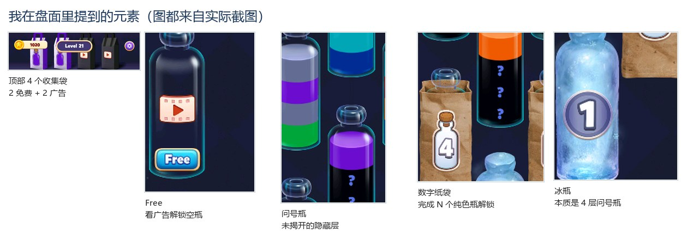
表 0｜盘面元素。把它们分开看，才能判断一关是“难”还是“没讲清楚”。
所以下文的“空瓶”默认指免费空瓶；提到 Free 时会写“+N 个广告空瓶”。实际体验只看了 L7、L33 两次广告解锁空瓶，其他关没有看 Free 广告，也没有使用加瓶、刷新、撤销；截图保留原貌，是为了说明它们对缓冲和信息的影响，不是用它们降低难度。
APK 是 2025-10 测试版，广告/道具无限可点；真实线上版本的广告频率、支付和体力规则可能不同。因此我的结论落在关卡结构与数据上，不把“广告一定能看”当作设计前提。
2.5 截图证据
附件中提供 100 关首屏原图（`关卡截图/level_001.png` 至 `level_100.png`）和对照关的实测截图。正文会选用其中 20 个代表关做配对比较；所有关卡图在附录中以 5 张联表展示。
3 好关/坏关的判断标准
判断标准这部分我最先想的是“跟谁比”。100 关的用户是顺序进来的，直接拿 L8 的 94.9% 去要求 L90 没意义。我最后按同阶段、相邻关、同机制三种比法来做，标准分三层：同阶段先看相对位置，再看绝对红线，最后用截图和点击复核。
3.1 第一步：把 100 关切成 10 个阶段
游戏里每 5 关有一个宝箱进度条，但 5 关样本太小，单关异常会把阶段中位带偏。我采用 每 10 关一个分析阶段，共 10 段；每段内部再包含两个 5 关小宝箱组。理由：
10 关足够算中位数、前 3/后 3，不会被单个“神仙关”或“灾难关”完全支配。
数据在 10 关尺度上呈现清晰的难度波：L33、L49、L62、L70、L92–L98 等峰值都落在 10 关段落内，而不是随机散布。
用户是按顺序进来的，同阶段的教学进度、解锁内容、体力状态更接近，比较更公平。
这是分析口径，不是官方章节划分。体验对照这部分的体验对照也只在同阶段/相邻关之间做。
3.2 第二步：先看指标之间到底在说什么
我对 100 关做了 Spearman 相关分析，结果说明：完成率、无结果、尝试次数、退出率基本在描述同一件事——玩家有没有能力/意愿把这关走完。它们高度冗余，不能简单加权五项。
| 指标对 | Spearman ρ | 解释 |
|---|---|---|
| 完成率 ↔ 尝试次数 | −0.993 | 完成率越低，平均尝试次数越高；两者几乎是同一个难度轴的两面。 |
| 完成率 ↔ 无结果 | −0.969 | 没走完的人越多，完成率越低。无结果是“无声失败”的主要表现。 |
| 完成率 ↔ 退出率 | −0.972 | 完成率越低，显式退出也越多。 |
| 无结果 ↔ 尝试次数 | +0.949 | 卡住的人既会重试，也会直接关掉。 |
| 关流失 ↔ 分钟流失 | +0.829 | 分钟流失主要由关流失驱动；它不是一个独立的“质量维度”。 |
| 总耗时 ↔ 胜利耗时 | +0.947 | 总耗时主要由胜利过程拉长，重试时长只是补充。 |
表 1｜指标相关性：完成率/尝试/无结果/退出高度共线；分钟流失与关流失同向，不能单独当总分。
所以健康分只看三件事：
完成率：有没有把这一关走完。
后关留存（1 − 关流失）：走完之后还愿不愿意继续。
无结果的反向：有没有在关卡中途无声离开。
尝试次数和总耗时放进“摩擦分”，只用于解释“为什么难”，不直接判定好坏；否则会把“耐玩的挑战关”误杀。分钟流失刻意不进健康分，因为它既受关流失影响，又受总耗时影响，单独使用会制造假好关（分钟流失这部分）。
3.3 健康分按阶段内百分位，不按全表绝对值
对每个阶段内的 10 关，把三个指标转成 0–1 的百分位，再取：
健康分 = 0.45 × 完成率百分位 + 0.35 × 后关留存百分位 + 0.20 × 无结果反向百分位
另算一个仅用于解释的摩擦分：
摩擦分 = 0.45 × 尝试次数百分位 + 0.30 × 总耗时百分位 + 0.25 × 重玩耗时百分位
健康分前 3 名 = 该阶段标杆（S）；后 3 名 = 优先复核的偏难关。健康分不跨阶段直接比大小，只在同一阶段内排名。这样 L2（总耗时只有 53 秒的短教学）不会被拿去和 L33（823 秒的长关）比“谁更难”。
为什么还有“达标稳健（A）”一档？ 如果只取每段前 3，L14（93.0% 完成、1.76% 关流失、1.07 次）会因为同阶段有 L15/17/18 三个更强样本而被标成普通，这显然不合理。因此另设 A 档：完成率 ≥ 85%、关流失 ≤ 2.5%、无结果 ≤ 12%、尝试 ≤ 1.2、且无红旗。它不占前三的名额，但仍然是好关。最终好关 = 30 个阶段前三（S）+ 11 个达标稳健（A）= 41 个；这样既保留“阶段内谁最好”的相对判断，也不会把高分关误杀。
3.4 绝对红旗：阶段排名之外还要有底线
只靠阶段内排名会有一个漏洞：如果 10 关都很差，后 3 名也仍然是“相对好”。所以我叠加一组绝对红旗，触发任意一条就必须复核：
| 信号 | 判定 | 为什么是红旗 |
|---|---|---|
| 完成率塌陷 | 完成率 < 50%，或比阶段中位低 15pp 以上 | 一半以上进入者没有走完；这是产品级问题，不只是“偏难”。 |
| 卡点 | 平均尝试 ≥ 2.0 次 | 用户不是没兴趣，而是被反复挡住；时间成本已经显著上升。 |
| 无声离开 | 无结果比阶段中位高 8pp，且尝试次数也高 0.2 次以上 | 既走不完又反复试，说明不是“懒得玩”，而是“卡住后放弃”。 |
| 显式退出 | 退出率 ≥ 3% | 明确点了退出，通常是挫败或误触，不能只归因于难度。 |
| 漏斗断点 | 关流失比阶段中位高 1pp，且完成率低于阶段中位 | 完成后不继续，说明这一关可能把玩家从“想再玩一关”推走了。 |
表 2｜绝对红旗。红旗不是自动判死，而是要求进入体验复核。
红旗只用于找出优先处理对象，不替代体验判断。比如 L85、L90 的完成率只有 61–63%，但关流失/无结果没有双高，我把它们标成“挑战观察”，没有直接判坏。
3.5 第三步：同阶段、相邻关、同机制三种对照
判断“谁和谁比”比判断“谁分数高”更重要。我用了三种对照：
| 对照方式 | 解决什么问题 | 例子 |
|---|---|---|
| 同阶段中位/排名 | 控制解锁深度、用户 cohort、体力阶段；回答“相对同批关卡是否健康”。 | L33 vs 31–40 阶段中位；L93 vs 91–100 阶段中位。 |
| 相邻关对照 | L32、L33、L34 的进入用户高度重叠，设计变量最少；回答“是不是这一关本身造成的”。 | L33 vs L34：相邻、同阶段，完成率 15.9% vs 96.5%。 |
| 同机制对照 | 控制“是否有隐藏色/冰瓶/纸袋”，回答“同样的机制为什么一关好玩、一关劝退”。 | L7 vs L8（都有 ?）；L23 vs L29（都有 ?/道具位）；L34 vs L33（都有 ? 和纸袋）。 |
表 3｜三种对照。最强的因果证据是相邻关，因为用户几乎同一批；全表比较只能做线索。
为什么不直接和 L90 比 L8？ 因为进入 L90 的用户已经筛过 89 关，留存下来的本身就是高意愿人群；用 L8 的 94.9% 去要求 L90，既不公平，也无法指导设计。比较必须在相近阶段/人群内进行。
3.6 好关和坏关长什么样
按上述标准，100 关里有 41 个好关（30 个阶段前三 + 11 个达到稳健阈值但不在前三）、17 个触发红旗的坏关、4 个挑战观察、9 个偏难观察、29 个普通关。把 41 个好关和 17 个坏关的中位数放在一起，差异非常清楚：
| 指标 | 41 个好关（中位） | 17 个坏关（中位） | 读法 |
|---|---|---|---|
| 完成率 | 92.6% | 47.7% | 好关几乎人人能走完；坏关一半以上走不完。 |
| 关流失 | 1.14% | 3.27% | 坏关完成后不继续的比例约为好关的 3 倍。 |
| 无结果 | 6.8% | 24.9% | 坏关的近四分之一进入者在关卡中途无声离开。 |
| 平均尝试 | 1.07 次 | 2.06 次 | 坏关把“玩一关”变成了“重试两次以上”。 |
| 总耗时 | 217 秒 | 365 秒 | 坏关更久；不是更耐玩，而是更多卡住/重试。 |
| 退出率 | 0.1% | 2.2% | 好关几乎没人主动退出；坏关有明确的退出信号。 |
| 分钟流失 | 0.31 | 0.45 | 坏关整体反而更高；低分钟流失不能单独证明好。 |

表 4｜好关和坏关的中位数。坏关的问题不止难度：完成、留存、无结果、尝试、退出同时在恶化。
好关不只是完成率高。 它的无结果低、关流失低、尝试次数接近 1、总耗时稳定在 200 秒上下、退出率极低。它让玩家在单位时间内完成更多关，并且完成后愿意继续。
坏关的数据特征是：完成率低 + 无结果高 + 尝试次数高，三者至少两项同时出现；严重时关流失和退出率也上升，总耗时被拉长。只出现“完成率低但关流失低”的关卡，我会先放进挑战观察，而不是直接判坏——这是 L85/L90 与 L93 的区别。
3.7 十个阶段的总览
| 阶段 | 主题 | 完成率 | 关流失 | 无结果 | 次数 | 总耗时 | 好关（前三+达标） | 阶段红旗/坏关 |
|---|---|---|---|---|---|---|---|---|
| 1 L1–10 | 新手教学与第一次拥挤 | 78.2% | 5.79% | 20.2% | 1.21 | 276s | L2、L3、L8 | L7、L9 |
| 2 L11–20 | 三段门槛后的蜜月期 | 93.2% | 1.97% | 6.7% | 1.06 | 231s | L14、L15、L16、L17、L18、L19、L20 | L11、L12、L13 |
| 3 L21–30 | 稳定爬坡 | 82.4% | 1.83% | 13.1% | 1.21 | 264s | L21、L22、L24、L25、L29 | L23、L26 |
| 4 L31–40 | 第一次大陡坡 | 72.7% | 1.86% | 17.9% | 1.35 | 292s | L34、L38、L39 | L33、L40 |
| 5 L41–50 | 高峰后的恢复 | 77.0% | 1.59% | 15.2% | 1.29 | 274s | L41、L46、L48 | L49 |
| 6 L51–60 | 稳定扩圈 | 80.7% | 1.38% | 13.7% | 1.23 | 290s | L52、L57、L59 | L55 |
| 7 L61–70 | 双峰夹击 | 77.9% | 1.31% | 15.3% | 1.27 | 280s | L63、L64、L66 | L62、L70 |
| 8 L71–80 | 全程最舒适区 | 86.5% | 0.97% | 10.2% | 1.15 | 245s | L73、L75、L76、L77、L78、L79 | L80 |
| 9 L81–90 | 高位平台 | 83.8% | 0.97% | 11.6% | 1.19 | 268s | L81、L86、L87、L88、L89 | 无（有观察项） |
| 10 L91–100 | 终局压力测试 | 68.1% | 1.33% | 16.6% | 1.45 | 308s | L94、L97、L100 | L92、L93、L98 |

表 5｜十个阶段的数据总览。完成率/关流失/无结果/次数/耗时均为该阶段 10 关中位数。
阶段曲线是波动的：“教学/拥挤 → 蜜月 → 两次大陡坡 → 恢复 → 双峰 → 最舒适 → 高位平台 → 终局压力”。前 100 关没有稳定爬坡，难度是靠几个尖峰带节奏。尖峰本身可以保留，问题在于尖峰前后的“缓冲关”够不够、尖峰内的信息/空间读不读得懂。
3.8 逐阶段：好关、坏关与判断理由
3.8.1 阶段 1｜L1–10：不是平滑教学，是四关墙
L2、L3 是正常入门，完成率 93.1%、91.3%。真正的墙从 L4 开始：L4 76.3%、L5 80.0%、L6 70.8%、L7 58.7%，无结果从 21.6% 一路升到 29.7%；L5 的关流失 8.86% 是这一段最高。数据只把 L7 判成坏关，L4/L5 还是“普通”，但把四关连起来看，它们是一段连续的难度墙。L7 我是看了一次广告解锁空瓶才过的；不看广告过不去，所以它是前 10 关里最硬的一关。L8 突然回到 94.9%，像把玩家从墙里拉出来；我第一次玩时觉得“关卡顺序打乱了吧”，数据也支持这个感觉。L9 的 61.1% 和无结果 26.2% 说明冰瓶第一次出现时没有讲清楚；L10 又回到“没有空瓶 + 问号多”的组合。这个阶段的问题不是单关，而是四关连续加码，再用 L8 急刹。
3.8.2 阶段 2｜L11–20：第二道墙 + 七关蜜月
数据上 L11 只有 72.5%，但我个人一遍过；真正的墙是 L12、L13：L12 70.4%、无结果 22.2%，L13 只有 44.1%、无结果 32.8%、尝试 2.15 次。L13 的免费空瓶为 0，旁边 2 个 Free 都要看广告；我当时的做法是直接退，没有看广告。撑过 L13 后，L14–L20 的完成率回到 91.8–94.1%、无结果 5.8–8.1%，是七关蜜月。所以这一段不是“三关门槛”，而是“两关墙 + 七关蜜月”。L14–L20 里很多关没有完全空瓶，但瓶底只有一层的瓶子倒一次就能腾空，相当于送了两个隐性空瓶；这正是我 L11 后学会的打法。
3.8.3 阶段 3｜L21–30：稳定爬坡，两次局部卡点
L21、L22、L29 都在 92.6–94.2% 完成率，L24/L25 也在 87% 左右且低流失，是稳定好关。L23（50.8%、无结果 28.3%、尝试 1.92）和 L26（49.8%、无结果 27.3%、尝试 1.96）是两次局部卡点，且都伴随大量 ? 和广告位；L29 同样是 ? 盘面却能给到 94.2%，说明问题不在“隐藏”本身，而在是否有足够的可行动空间。L30（68.3%、尝试 1.44）是偏难观察，不触发绝对红旗。
3.8.4 阶段 4｜L31–40：一次很陡的断崖
L33 是我最想先修的一关：完成率 15.9%、关流失 6.27%、无结果 32.3%、平均尝试 5.92 次、总耗时 823 秒、退出率 4.9%。它的相邻关 L34 完成率 96.5%、尝试 1.03 次、总耗时 217 秒，两关几乎是同一批用户，却呈现完全不同的体验。L34/38/39 是阶段好关，L40（47.7%、尝试 2.06）是次级卡点，L32（65.3%、尝试 1.51）只是偏难观察。L33 的难，来自满盘、隐藏、纸袋位挤占，以及免费空瓶只有 1 个（另 2 个 Free 要广告）同时出现。
3.8.5 阶段 5｜L41–50：高峰后的恢复，L49 再次断崖
L41（93.8%）和 L48（88.5%）是稳定好关；L46（79.1%）是中等但健康。L49 是第二次大断崖：完成率 22.9%、尝试 4.22 次、关流失 4.02%、无结果 24.9%、退出 3.7%；它只有 1 个免费空瓶 + 2 个 Free 广告空瓶，总缓冲并不比 L41 的 3 个免费空瓶多。L44（59.2%）和 L45（67.9%）是偏难观察，说明这个阶段的问题不是整体难度过高，而是个别满盘关。如果只看阶段完成率中位 77.0%，会漏掉 L49 这个尖峰。
3.8.6 阶段 6｜L51–60：稳定扩圈，L55 是局部问题
L52（92.0%、尝试 1.08、168 秒）是全阶段最顺滑的样本；L57/L59 是稳定好关。L55（54.8%、尝试 1.80、无结果 22.0%）是阶段红旗；L54/L60 是偏难观察。这个阶段适合做“好关模板”的批量复制：12–16 瓶、1–2 个空瓶缓冲、颜色可区分、总时长 3–5 分钟。L55 的问题更像“信息/空间不足”，而不是单纯的数值难度。
3.8.7 阶段 7｜L61–70：双峰夹击
L66 是阶段最佳（94.4%、尝试 1.06、237 秒）；L63/L64 也稳定。L62（27.2%、尝试 3.56、571 秒）和 L70（32.2%、尝试 3.04、332 秒）是双峰，且都伴随退出/无结果上升。L67（70.9%、尝试 1.40）是偏难观察。这个阶段的“平均值”看起来只有 77.9%，但真正的问题是两座峰，不是整段都难。
3.8.8 阶段 8｜L71–80：全程最舒适，但尾部有一个坏样本
L73、L77、L79 的完成率都在 89–96%，L75/L76/L78 也达到稳健阈值，关流失 0.7–1.0%，总耗时 172–241 秒；这是全表最健康的阶段。L80（60.9%、尝试 1.62、无结果 20.7%、退出 1.5%）是唯一的红旗；L72/L74 是偏难观察。这个阶段证明：不用把每关都做得很难，短、清晰、有空位的关卡也能贡献很高的完成率和留存。
3.8.9 阶段 9｜L81–90：高位平台，没有真正的“坏关”
L81、L86、L88 是阶段前三，L87/L89 也达到稳健阈值（完成率约 87%，关流失 0.9%）。L83、L85、L90 是阶段后三名，但完成率仍有 61–74%、关流失 1.1–1.4%，没有触发绝对红旗。L85/L90 更像挑战观察：难度偏高，但玩家没有大规模放弃；不应为了“每段都要有坏关”强行判死。这是本标准刻意保留的灰度：低完成不等于坏，只有低完成 + 高无结果/高尝试/高退出才是坏。
3.8.10 阶段 10｜L91–100：终局压力测试，L94 是例外
L94（82.4%、尝试 1.21、143 秒）是阶段最佳；L97/L100 也相对健康。L92/93/98 是三个尾部问题关：完成率 40.1%/46.4%/43.4%，尝试 2.45/2.11/2.26，退出 3.1%/2.7%/2.5%。L93 还是分钟流失这部分的关键反例：分钟流失只有 0.26，看起来“很好”，但完成率 46.4%、无结果 22.5%，是典型的“完成者筛选”。
阶段看下来，我的结论是：前 100 关不是一条平滑曲线，而是用尖峰做节奏。尖峰可以保留，但前提是盘面读得懂、空瓶够用、第一次出现机制时别急着收学费。L33/L49/L62/L70 这四段我会先复盘；L11–L13 我会重排；L85/L90 先观察，不急着判死。
3.9 判断标准如何被验证
标准不是拍脑袋定的，我用三组反证检查过：
反证一：分钟流失单独排名会选出坏关。 按分钟流失从低到高排，L93 排在第 29 位（前 30% 低位），但它是坏关；说明必须加入完成率/无结果/尝试。
反证二：完成率单独排名会误伤挑战关。 L90 完成率 63.3%，全表偏低，但关流失 1.23%、无结果 19.2%，没有红旗；如果只看完成率，会把它误判为坏关。
反证三：阶段排名会掩盖局部集群。 阶段 2 的完成率中位 93.2%，但 L11–L13 三关全部低完成、高关流失；如果只看阶段中位，会漏掉整个“下马威”集群。因此我在阶段排名之外保留了绝对红旗和相邻关对照。
这也是我反复强调“谁和谁比”的原因：和同阶段比，是控制变量；和相邻关比，是找因果；和同机制比，是解释体验。 三者缺一不可。
3.10 我的 20 关实测：数据和手感哪里对不上
我从 L2 打到 L21，只看了 L7、L33 两次广告，其他关没看广告，也没用道具。这 20 关的判断和数据分层放在一起，能看出三种关系：
| 区间 | 我的判断 | 数据分层 | 关键原因 |
|---|---|---|---|
| L2–L3 | 好 | S 好关 | 颜色少、空瓶多，基本一眼能倒。 |
| L4–L7 | 坏 | L4/L5 普通，L6 观察，L7 坏 | 四关连续加码；L5 关流失 8.86%；L7 只有 58.7%，必须看一次广告才能过。 |
| L8 | 好 | S 好关 | 突然回到 94.9%，一遍过；我当时觉得关卡顺序被打乱了。 |
| L9 / L11 | 好 | 坏关 | 数据只有 61.1% / 72.5%，但我一遍过；熟练玩家和大盘的差异。 |
| L12–L13 | 坏 | 坏关 | L13 没有免费空瓶、2 个 Free 要广告，我直接退。 |
| L14–L21 | 好 | 好关 | 没有完全空瓶，但有两个一层瓶，相当于隐性空瓶，全部一遍过。 |
表 5b｜我的 20 关实测与数据分层。明显好/坏的地方高度一致，边缘关的分歧来自“人群平均”和“个人策略”的差异。
这张图说明两件事。第一，明显好/坏的地方，数据和手感是一致的：L2–L3、L8、L12–L13、L14–L21 都能对上。第二，边缘关会分歧：L4–L6/L10 数据看着普通，但关流失和无结果已经很难看；L9/L11 数据是坏关，但我学会四份链后一遍过。数据是人群平均，体验是个人策略，两者不能互相替代。
这也解释了我为什么“回头再打 L4 就一遍过”：不是关卡变了，是我在 L11 后学会了怎么腾瓶位。同样一关，第一次觉得坏，第二次觉得不过如此，问题就不在难度数值，而在教学。
补测 L23/L26/L33 也落在同一模式里：L23 50.8%、L26 49.8%，都是 0 免费空瓶 + 2 个 Free，四步法启动不了；L33 15.9% 更极端，先给一个“空瓶”，填满后全是问号，最后看广告才过。L33 的 5.92 次、823 秒，是假希望拖出来的。
4 好关与坏关差在哪
我按正常玩家路径从 L2 打到 L21，只看了 L7、L33 两次广告，其他关没看广告，也没用道具；后来补测 11 关（L23/L26/L33/L49/L55/L62/L70/L80/L92/L93/L98）。前 11 关我差点放弃；L11 之后才摸到诀窍，回头再打 L4，一遍过。这个反差比任何单个关卡都说明问题：不是玩法难，是游戏没教会我。
这 20 关不是均匀的 20 关，而是三段：L4–L7 第一道墙，L8 突然回落；L12–L13 第二道墙，L13 必须看广告拿空瓶；L14–L21 八关蜜月，系统给了两个“一层瓶”当隐性空瓶。下面先把 20 关的判断和数据放在一张表里，再拆三段。
4.1 20 关实测总表
| 关卡 | 我的判断 | 数据分层 | 完成率 | 无结果 | 我的原因 |
|---|---|---|---|---|---|
| L2 | 好 | S 好关 | 93.1% | 6.8% | 颜色少、空瓶多，基本一眼能倒。 |
| L3 | 好 | S 好关 | 91.3% | 8.5% | 有点难度但不高。 |
| L4 | 坏 | 普通 | 76.3% | 21.6% | 难度跳、瓶子多、空瓶只有一个，卡关，必须看广告。 |
| L5 | 坏 | 普通 | 80.0% | 18.7% | 没有空瓶，卡了一次，花的时间太长。 |
| L6 | 坏 | 偏难观察 | 70.8% | 25.2% | 给了两个空瓶还是卡，必须看广告。 |
| L7 | 坏 | 坏关 | 58.7% | 29.7% | 卡了两次，最后看一次广告解锁空瓶才过；问号多到看不到颜色。 |
| L8 | 好 | S 好关 | 94.9% | 5.0% | 一遍过，不用看广告；感觉关卡顺序被打乱了。 |
| L9 | 好 | 坏关 | 61.1% | 26.2% | 两个空瓶 + 冰冻瓶，一遍过。 |
| L10 | 坏 | 普通 | 67.6% | 23.2% | 没有空瓶，问号特别多。 |
| L11 | 好 | 坏关 | 72.5% | 19.5% | 难度适中，一个空瓶，一遍过。 |
| L12 | 坏 | 坏关 | 70.4% | 22.2% | 一个空瓶，过不了。 |
| L13 | 坏 | 坏关 | 44.1% | 32.8% | 没有空瓶，2 个 Free 要广告，我直接退了。 |
| L14 | 好 | 好关 | 93.0% | 6.8% | 没有空瓶，但可以一遍过。 |
| L15–L20 | 好 | 好关 | 91.8–94.1% | 5.8–8.1% | 没有空瓶，但有两个“一层瓶”，倒一次就空，相当于隐性空瓶。 |
| L21 | 好 | 好关 | 93.7% | 5.8% | 一遍过（具体原因没补）。 |
表 9｜我实际玩的 20 关。L15–L20 合并成一行，因为它们给的是同一种“两个一层瓶”的结构。
4.2 L4–L7：第一道墙，L8 急刹
L4–L7 是我第一次想关游戏的地方。L4 难度跳、瓶子多、空瓶只有一个；L5 没有空瓶，卡了一次，虽然通关但不想继续；L6 给了两个空瓶还是卡；L7 卡了两次，问号多到看不到颜色，最后看了一次广告解锁空瓶才过；它是我前 10 关里最难过的一关。数据上 L4/L5 只是“普通”，但关流失 7.87%/8.86%、无结果 21.6%/18.7%，已经把“通关了不想继续”和“没走完”写得很清楚。
| 关卡 | 完成率 | 关流失 | 无结果 | 尝试 | 总耗时 | 我的判断 |
|---|---|---|---|---|---|---|
| L4 | 76.3 | 7.87 | 21.6 | 1.22 | 282s | 坏 |
| L5 | 80.0 | 8.86 | 18.7 | 1.19 | 271s | 坏 |
| L6 | 70.8 | 6.89 | 25.2 | 1.33 | 351s | 坏 |
| L7 | 58.7 | 6.28 | 29.7 | 1.61 | 306s | 坏 |
| L8 | 94.9 | 1.97 | 5.0 | 1.04 | 224s | 好 |
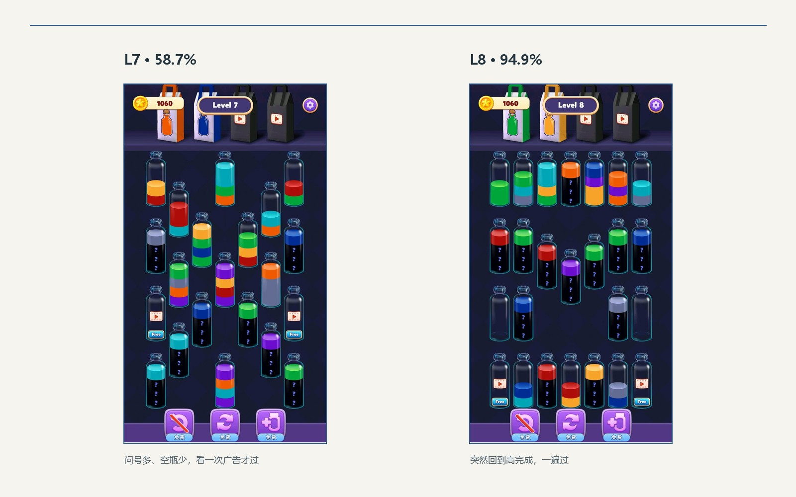
表 9a｜L4–L8。四关连续下坡，L8 突然回到 94.9%，不是玩家突然变强，是关卡放水。
| L7：坏关首屏，问号多、空瓶少 | L8：好关首屏，突然回到 94.9% |
|---|
我当时的第一反应是：关卡顺序打乱了吧。这不是错觉：L7 的完成率 58.7%，L8 直接 94.9%，中间没有过渡。难度曲线不是往上爬，是先挖坑再突然拉平。
4.3 L12–L13：第二道墙，广告门
L12 我只有一个空瓶能用，过不了。L13 更直接：0 个免费空瓶，旁边 2 个 Free 都要看广告，我直接退了。L7 是“看一次广告能过”，L13 是“看了广告才有唯一空瓶，我连广告都不想看”。数据也对得上：L12 70.4%/22.2% 无结果，L13 44.1%/32.8% 无结果、2.15 次。L13 不是一个“难”的关卡，它是一道广告门：不把唯一缓冲放在广告后面，玩家本来可以试。
这里有个细节：L12 的截图里其实有 2 个完全空瓶，但我当时只觉得 1 个能用。这说明“看到的空瓶”和“能用的空瓶”不是一回事——空瓶被颜色、位置和下一步堵住，数量就只是账面数字。L13 则是另一个极端：账面上有 2 个 Free，但都要广告，等于没有免费缓冲。
后来我又补测了 L23：0 个免费空瓶、2 个 Free、两个纸袋 4、3 个冰瓶 1。我没看广告，直接退了；但我确定，看一次广告拿一个空瓶，四步法就能启动，这关能过。它不是不会做，是钥匙在广告后面。
L26 几乎是 L23 的复制：0 个免费空瓶、2 个 Free、纸袋 3/4、冰瓶 2，几乎全是问号瓶；49.8%、27.3% 无结果。四步法同样启动不了，我也没看广告，直接退了。两关在同一阶段连着出现，像同一道广告门收两次费。
把 L7、L23、L26、L13、L33 放在一起，是一条很清楚的广告门阶梯：L7 58.7%，看一次广告，过了；L23 50.8%，知道看一次能过，但没看，退了；L26 49.8%，同样启动不了；L13 44.1%，也没看；L33 15.9%，我先看到一个“空瓶”，填满后发现全是问号，最后看广告才过。L33 的 5.92 次、823 秒是数据，不是我个人次数；但它把“假希望”三个字写得很清楚——不是没给，是给了一个会花掉的假空瓶。
L33 我实际打了：先看到 1 个空瓶，填满后所有瓶子都是问号，等于没有缓冲；最后看广告才过。数据 15.9%、32.3% 无结果、5.92 次、823 秒、4.9% 退出。它比 L23/L26 更坏：L23/L26 一开始就没给假希望，L33 给了一个会花掉的空瓶，把尝试次数拖到 5.92。
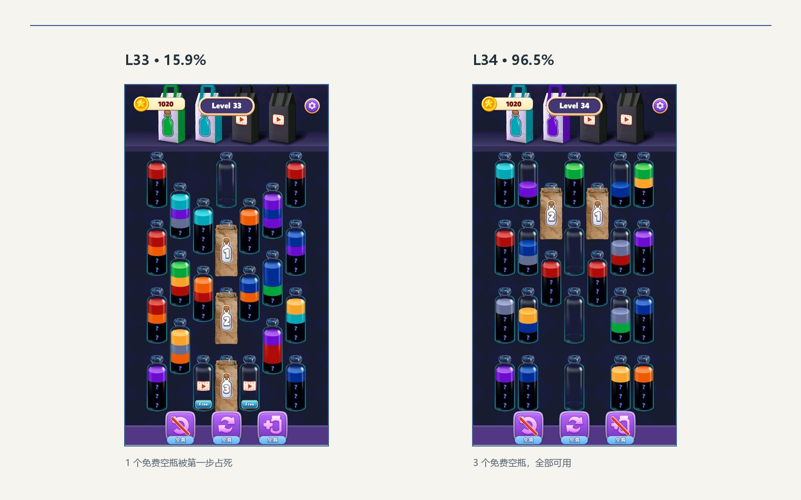
| 关卡 | 完成率 | 关流失 | 无结果 | 尝试 | 总耗时 | 免费空瓶 | Free 广告空瓶 |
|---|---|---|---|---|---|---|---|
| L12 | 70.4 | 3.88 | 22.2 | 1.38 | 400s | 2 | 2 |
| L13 | 44.1 | 5.85 | 32.8 | 2.15 | 447s | 0 | 2 |
| L14 | 93.0 | 1.76 | 6.8 | 1.07 | 253s | 0 | 0 |
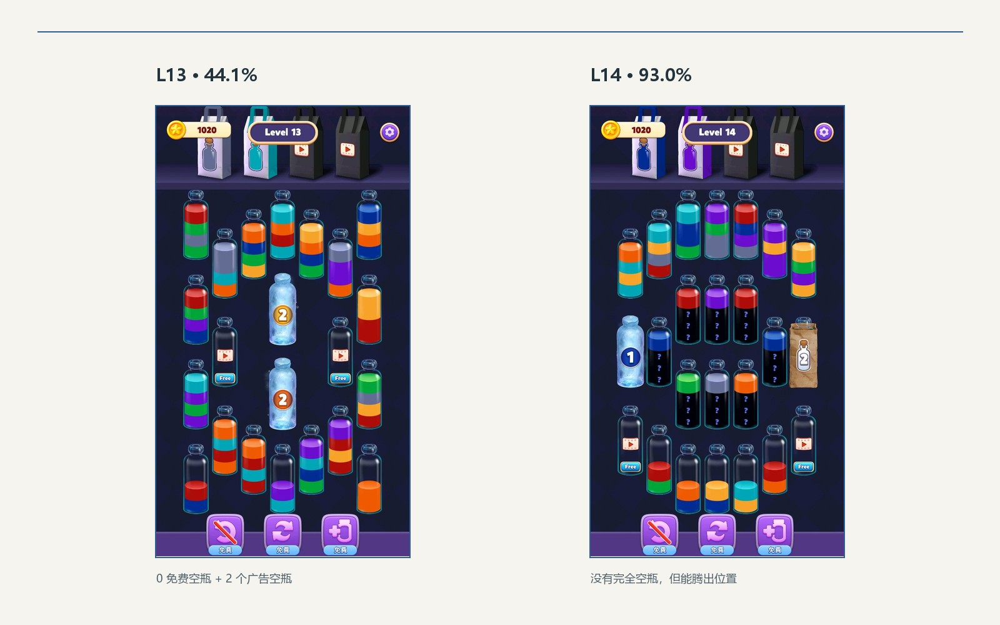
表 9b｜L12–L14。L12 看起来有空瓶，但很快被花光；L13 把唯一缓冲放到广告后；L14 没有空瓶却能一遍过。
| L13：0 免费空瓶 + 2 个 Free 广告空瓶 | L14：没有空瓶，但布局能腾出位置 |
|---|
这里要把“没有空瓶”拆开看。L13 的“没有空瓶”是没有免费缓冲，唯一退路在广告后面；L14–L20 的“没有空瓶”是瓶底只有一层，倒一次就空，相当于两个隐性空瓶。前者把玩家推向广告或退出，后者把缓冲藏在布局里，所以 L14–L20 能回到 91.8–94.1%。
4.4 L14–L21：八关蜜月，和“送两个空瓶”的真相
L14–L21 我全部一遍过。数据也是这一段最健康：完成率 91.8–94.1%、无结果 5.8–8.1%、尝试 1.05–1.08。你问这是“我找到诀窍”还是“它确实送瓶子”——两个都有。
一方面，游戏确实放水了：L13 的 44.1% 之后直接回到 91.8–94.1%，中间没有继续加码。另一方面，我在 L11 后学会了“四份链 + 保底瓶”：先找能凑四份的颜色；没有，就找“三份在明面、第四份隔一层”的颜色，把压住它的顶层挪走；再没有，就守住单色瓶，不制造新的混合瓶。L15–L20 的两个“一层瓶”，正好是这套打法的启动素材。
L15：没有完全空瓶，但有两个瓶底只剩一层的瓶子；倒一次就空，等于两个隐性空瓶。
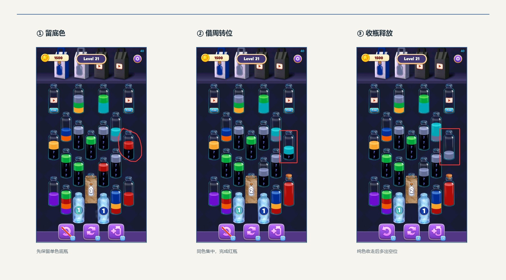
4.5 L9 / L11：数据坏，我为什么一遍过
L9 和 L11 的数据都是坏关：L9 完成率 61.1%、无结果 26.2%；L11 完成率 72.5%、无结果 19.5%，还带三个红旗。但我都是一遍过。原因不是数据错了，而是我已经会用“一层瓶当空瓶、四份链、保底瓶”——大盘玩家还在摸索时，我已经在算两步之后的空间。
| 关卡 | 数据分层 | 完成率 | 无结果 | 尝试 | 我的结果 |
|---|---|---|---|---|---|
| L9 | 坏关 | 61.1% | 26.2% | 1.57 | 一遍过 |
| L11 | 坏关 | 72.5% | 19.5% | 1.34 | 一遍过 |
表 9c｜L9/L11：数据坏，我个人顺。保留数据标签，不拿一个人的手感推翻大盘。
这也是体验对照这部分最值得写的一点：“难”不是关卡的绝对属性，它取决于玩家有没有学会策略。 同一关，第一次觉得坏，学会后一遍过；问题不在数值，在教没教。
4.6 数据层的后续对照（我没有实际玩）
L34、L41、L57、L58 我没有实际打到（L33/L49 是补测；L55/L62/L70/L80/L92/L93/L98 见 2.7）。下面三组只用后台数据和 100 关首屏截图做对照，不写“我实测”，也不声称通关。它们用来验证前面从 20 关里得到的结论：免费缓冲、广告缓冲、布局路径。
| 对照 | 好关 | 问题关 | 关键差异 |
|---|---|---|---|
| L34（数据）vs L33（实测） | 96.5% / 3 个免费空瓶 / 0 个 Free | 15.9% / 名义 1 免费（诱饵）+ 2 个 Free | L34 可用免费 3；L33 的 1 个空瓶是诱饵，实际可用免费 0。 |
| L41 vs L49 | 93.8% / 3 个免费空瓶 / 2 个 Free | 22.9% / 1 个免费 / 2 个 Free | 同样 2 个 Free，免费空瓶 3 vs 1。 |
| L57 vs L58 | 81.9% / 长布局 + 纸袋 3 | 81.1% / 紧凑、无纸袋 | 数据几乎一样，视线动线和路径长度不同。 |
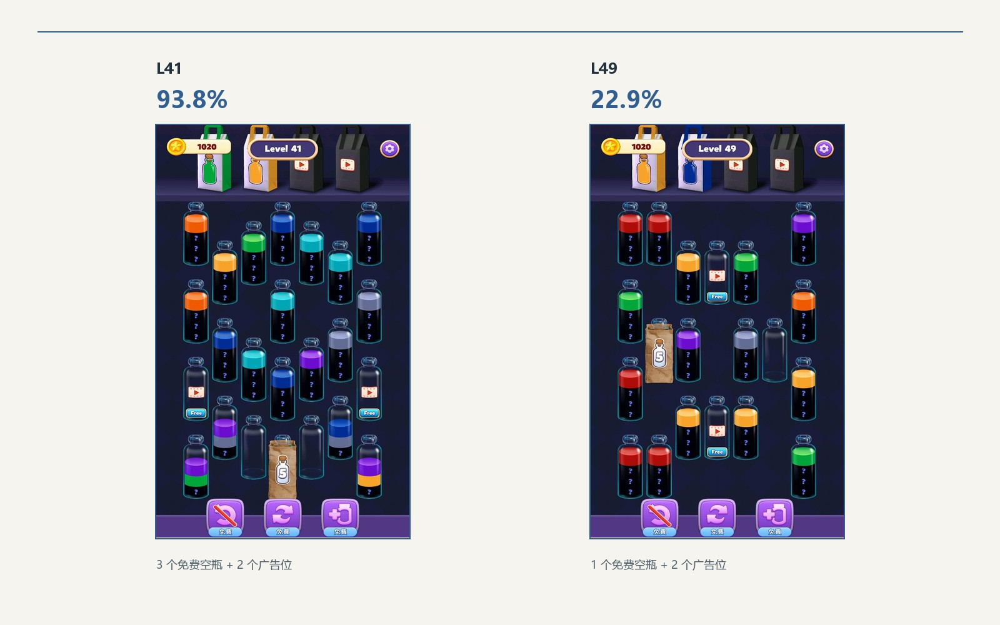
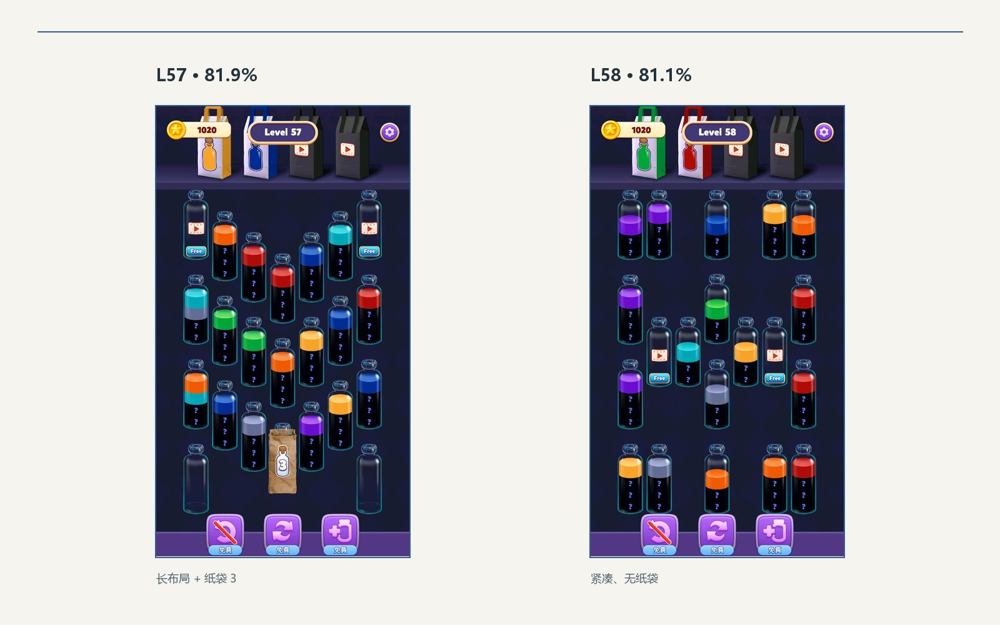
表 9d｜数据层的后续对照。它们不是我的实玩记录，只用于验证“缓冲/路径”这两个变量。
| L34：3 个免费空瓶，96.5% | L33：1 个免费 + 2 个广告空瓶，15.9% |
|---|
| L41：3 个免费空瓶 + 2 个 Free，93.8% | L49：1 个免费 + 2 个 Free，22.9% |
|---|
| L57：长布局 + 纸袋 3，81.9% | L58：紧凑、无纸袋，81.1% |
|---|
4.7 补测汇总：三类假缓冲
把 L7、L13、L23、L26、L33、L49、L55、L62、L70、L80、L92、L93、L98 放在一起，坏关不是一种，是三种。它们的共同点不是“难”，是启动条件被拿走了。
| 类型 | 关卡 | 盘面 | 完成率 | 广告行为 / 我的判断 |
|---|---|---|---|---|
| 无空瓶 | L7 / L13 / L23 / L26 / L92 | 0 免费空瓶 + 2 Free，满盘问号/冰/纸袋 | 40.1–58.7% | L7 看了并过；其余没看，判断看一次必过，选择不看。 |
| 假空瓶 | L33 / L49 / L55 / L62 / L70 / L93 / L98 | 1–2 个空瓶，但没有可用顶色/第一步 | 15.9–54.8% | L33 看了并过；其余没看，判断看一次必过，选择不看。 |
| 固定顺序死锁 | L80 | 2 个底色瓶，顺序固定，最后回到两瓶死锁 | 60.9% | 没看，判断看一次必过，选择不看。 |
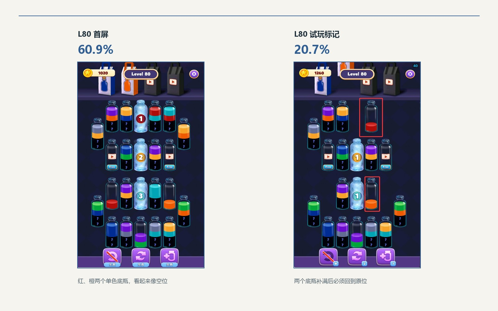
表 9f｜三类假缓冲。完成率不是难度排名：L80 的 60.9% 高于很多假空瓶关，但它的“前面固定化简”更伤 agency。
L55 是假空瓶里最直白的一个：两个空瓶摆在首屏，但全是问号/三层问号，还有 4 个冰瓶 2 和纸袋 3/5；空瓶给了跟没给一样。它的完成率 54.8%，比 L33/L49 高，因为玩家更快识破、1.8 次就退了，没有被拖到 L33 的 5.92 次。“更绝”和“完成率更低”不是一回事。
广告行为也要分开写：L7、L33 是我真的看了并过关；其他 11 关我都没看。我知道看一次广告拿一个空瓶就能启动四步法，但我选择不看。这不是“打不过”，是“能过，但不买账”。
4.8 实测边界
我实际玩了 L2–L21 共 20 关，后来补测 11 关（L23/L26/L33/L49/L55/L62/L70/L80/L92/L93/L98）。只有 L7 和 L33 看了广告并过关；其他关没有看广告，也没有使用加瓶/刷新/撤销道具。L34 以后没有逐关打，正文里只做数据和首屏截图对照。100 关首屏原图在附录，所有“实测”只指 L2–L21 + 这 11 关补测。
5 分钟流失专题
不一定。低分钟流失只能说明“完成的人离开得慢”，不能说明这关好。分钟流失 = 关流失 / 总耗时，它是一个被时间归一化的比率，不是关卡质量的总分。低分钟流失可能来自三种完全不同的情况：完成者真的愿意继续；完成者只是少数高意愿玩家；或者总耗时很长，把绝对的关流失摊薄了。
5.1 先看公式的分母和分子
指标定义里有两个关键细节：关流失只统计“完成了本关但未进入下一关”的用户，而无结果/中途退出不在分子里；总耗时把胜利耗时和重玩耗时都算了进去。这意味着：
一个关卡很难，很多人在中局直接关掉，他们的离开会进入“无结果”，但不会进入关流失；剩下能完成的是一批高意愿玩家，完成后继续的比例可能不低，于是分钟流失反而好看。
一个关卡很长，即使绝对关流失不低，除以较大的总耗时后，分钟流失也会被压低。L33 的 823 秒、L93 的 443 秒就是两个例子。
一个关卡很短、完成得很快，即使关流失低，分钟流失的比值也可能不低；L2 的总耗时只有 53 秒，分钟流失并不低，但它依然是阶段好关。
因此，低分钟流失只回答“完成者离开得慢不慢”，不回答“有没有更多人完成”“有没有更多人无声离开”“玩起来是否舒服”。
5.2 反例：L93 的低分钟流失是“长时 + 完成者筛选”
L93 的分钟流失只有 0.26（全表第 29 低，属于偏低），但它的其他指标是：完成率 46.4%、关流失 1.89%（高于 91–100 阶段中位 1.33%）、无结果 22.5%、平均尝试 2.11 次、总耗时 443 秒、退出率 2.7%。低分钟流失并没有让它成为好关，反而暴露了两个问题：
总耗时 443 秒，在 100 关里属于偏长；分母大，关流失 1.89% 被摊薄。
完成率只有 46.4%，意味着超过一半的进入者没有走完；这些人的离开主要记在“无结果”里，而无结果不进入关流失分子，所以分钟流失无法反映他们。
把 L93 和 L88 放在一起看最清楚：L88 的分钟流失 0.18、完成率 95.4%、关流失 0.66%、无结果 4.4%、尝试 1.05 次，它是真正的好关；L93 的分钟流失 0.26，与 L88 同处低档，但完成率只有一半、无结果高 5 倍、尝试次数高 2 倍。同处低档的分钟流失，一个是顺滑，一个是筛选。
| 关卡 | 分钟流失 | 完成率 | 关流失 | 无结果 | 尝试 | 总耗时 | 结论 |
|---|---|---|---|---|---|---|---|
| L88 | 0.18 | 95.4% | 0.66% | 4.4% | 1.05 | 217s | 好关：低比率 + 高完成 + 低无结果 |
| L93 | 0.26 | 46.4% | 1.89% | 22.5% | 2.11 | 443s | 坏关：低比率被长时/完成者筛选掩盖 |
| L90 | 0.26 | 63.3% | 1.23% | 19.2% | 1.57 | 288s | 挑战观察：硬但未崩，不能仅凭比率判好坏 |
| L8 | 0.53 | 94.9% | 1.97% | 5.0% | 1.04 | 224s | 好关：比率不低，但完成与留存都健康 |
| L33 | 0.46 | 15.9% | 6.27% | 32.3% | 5.92 | 823s | 坏关：长时也没有掩盖住绝对流失 |
| L49 | 0.59 | 22.9% | 4.02% | 24.9% | 4.22 | 406s | 坏关：高流失 + 高重试 |

表 6｜分钟流失与其他指标的反例。L88 和 L93 的分钟流失都处于低档，但一个完成率 95.4%，一个 46.4%。
5.3 低分钟流失的四种真实来源
| 来源 | 数据表现 | 该怎么判 |
|---|---|---|
| 完成者高意愿 | 完成率高、关流失低、无结果低、尝试≈1 | 可以视为好关的加分项，但仍要看体验；L88 是正例。 |
| 完成者被筛选 | 完成率低、无结果高、尝试高；分子只留下高意愿完成者 | 不是好关；L93/L90 是这类。 |
| 长时摊薄 | 总耗时明显高于同阶段、关流失不低但比值小 | 看绝对关流失和总耗时；L33/L93。 |
| 短时放大 | 总耗时很短、完成率高但关流失低 | 分钟流失不一定低，但不影响它是好关；L2/L3。 |
表 7｜低/高分钟流失的四种来源。比率本身没有方向，必须回到绝对指标。
5.4 我会怎么用分钟流失
我的做法是把它放在第三层诊断，而不是第一层筛选：
先用完成率、关流失、无结果、尝试次数筛出正常/可疑/严重问题；
再看分钟流失，只在“总耗时相近、难度相近”的关卡之间比较“单位时间的后关留存”；
最后看流失结构：如果无结果流失占主导，说明问题在中局难度/信息/空间；如果胜利流失占主导，说明完成后不继续，问题可能在下一关承接、广告、体力或节奏。
对一个低分钟流失的关卡，我会问四个问题：
完成率高不高？ 低于阶段中位 15pp 以上，先别急着夸。
绝对关流失低不低？ 不要只看比值；L93 的 1.89% 在阶段 10 反而偏高。
无结果高不高？ 高无结果意味着大量玩家没有走完，分子根本没统计到他们。
尝试次数/总耗时是否异常？ 高尝试+长耗时说明玩家在反复试错，不是“从容”。
四个问题都健康，分钟流失才是好关的加分项；只要有一项异常，低分钟流失都应先当作“需要解释的信号”，而不是结论。分钟流失低不是好关的充分条件，也不是必要条件。
| 你看到的现象 | 不要下的结论 | 应该补看 |
|---|---|---|
| 分钟流失低 + 完成率高 + 无结果低 | “这一关一定好” | 再看尝试次数和总耗时；确认不是靠少数高意愿完成者撑起来的。 |
| 分钟流失低 + 完成率低/无结果高 | “这一关留得住” | 这是“完成者筛选/长时摊薄”；按第 3.2 节的四个问题复核。 |
| 分钟流失高 + 完成率高 + 尝试≈1 | “这一关很差” | 可能只是短关/快节奏；看绝对关流失和下一关承接，L8 就是反例。 |
表 7b｜Q3 的判断卡：分钟流失只能当第三层诊断，不能当总开关。
6 乐趣、教学与改进
我先说好玩的地方，再说我作为策划觉得别扭的地方。结论不复杂：这游戏的底子很好，问题是它没把玩家教到能享受它的那一步。
6.1 好玩在哪
倒水本身是奖励。 液体落进瓶子的连续动画、颜色填充、瓶口高光、完成时的收瓶动画，构成低压力、可重复的感官满足；一局很短，不需要宏大叙事，点一下就有回报。
颜色归位的秩序感。 把混合瓶子整理成纯色瓶，是“从混乱到秩序”的视觉清洁；最后一瓶被填满、飞进收集袋的瞬间，完成感很直接。
收集袋连收的音效和动画，是这套反馈里最强的一下。 顶部四个袋子收已完成纯色瓶，两个免费、两个看广告；一个接一个收进去时，声音和动画确实抓人。
“第四份水就在下一层”的顿悟。 真正好玩的不是找同色，是你把压在上面的颜色挪走，发现下面正好是缺的那一份；一次操作，腾出一个瓶位，后面突然全通了。L15–L21 我一遍过，靠的就是这个。
短局、无倒计时、无硬失败。 点瓶、点目标，规则一眼会；没有时间压力，失败被转成“再试/加瓶/看广告”，对休闲玩家友好。
6.2 收集袋：好手感，坏堆积
顶部四个收集袋是我最喜欢的反馈，也是我觉得最可惜的地方。它们收的是已经完成的纯色瓶；如果完成的瓶子颜色和上面的袋子对得上，收进去很爽；对不上，瓶子就会堆在下面。盘面本来颜色就多，再堆一排完成瓶，视觉上更花，眼睛更累。
| 现状 | 问题 | 我会怎么改 |
|---|---|---|
| 完成的纯色瓶飞进袋子，颜色不匹配就堆在下方。 | 堆积的瓶子变成视觉噪音；连收的爽感被“越堆越乱”抵消。 | 完成一个瓶子就让它消失一个；屏幕四周发出该瓶子的颜色光效，直到下一个纯色瓶完成。 |
| 四个袋子两个免费、两个看广告。 | 广告袋在前期就会打断节奏；玩家还没理解收集意义，先看到广告。 | 把袋子做成纯反馈/收集，不要在前期用广告解锁；广告放到玩家理解循环之后。 |

表 8｜收集袋的体验问题。它不是“没用”，是“反馈很强，但堆积和广告把反馈弄脏了”。
我不是说收集袋没用。它的音效和动画是这游戏最像“捏泡泡纸”的地方；问题是它把“完成”的奖励变成了“堆在下面”的负担。让完成瓶立即消失、用屏幕边缘光效代替堆积，既保留反馈，又不增加视觉噪音。
6.3 元素没解释，新机制没预告
我玩到 L21 都没看到一段真正讲清楚元素的引导。问号瓶是什么、数字纸袋的数字代表什么、冰冻瓶有几层、Free 是广告空瓶还是普通空瓶、顶部四个袋子收什么——这些都要玩家自己猜。更糟的是，新元素没有预告：L4–L7 突然上问号，L9 突然上冰冻瓶，L12–L13 突然上数字纸袋和 Free。
| 元素 | 是什么 | 第一次明显出现 | 没讲清楚会怎样 |
|---|---|---|---|
| 问号瓶 | 没揭开的隐藏层 | L4–L7 | 玩家不知道要先腾位置，只能盲猜。 |
| 冰冻瓶 | 本质是 4 层问号瓶 | L9 | 层数多、遮挡强，突然出现会抬高理解成本。 |
| 数字纸袋 | 完成 N 个纯色瓶后解锁 | L12–L13 | 数字含义不明，玩家不知道要收几瓶，容易当成广告次数。 |
| Free 空瓶 | 看广告解锁的空瓶 | L7、L23、L26、L13、L33 | L7/L33 看广告才过；L23/L26/L13 没看，直接退；L33 还给了一个假空瓶。 |
| 顶部收集袋 | 收已完成纯色瓶 | 全程 | 不知道收什么、颜色不匹配会堆积。 |
表 8a｜五个元素、五次“没讲”。这不是玩家笨，是游戏把学习成本全丢给了玩家。
6.4 难度曲线是锯齿，不是阶梯
把前 21 关的完成率连起来看，它不是逐步上升，而是两段墙加一段蜜月：L2–L3 入门，L4–L7 第一道墙，L8 突然回到 94.9%，L9–L11 混合，L12–L13 第二道墙（L7 是第一次强制广告；L23/L26 看一次就能启动四步法但我没看；L13 是第二次、更硬的广告门；L33 是假空瓶），L14–L21 八关蜜月。玩家刚被 L7 打了一顿，L8 又突然送分；刚适应，L12–L13 又加码；撑过去，L14–L21 又全是顺的。
| 区间 | 完成率 | 无结果 | 我的感受 |
|---|---|---|---|
| L2–L3 | 91.3–93.1% | 6.8–8.5% | 入门，颜色少、空瓶多。 |
| L4–L7 | 58.7–80.0% | 18.7–29.7% | 第一道墙，连续加码，想关游戏。 |
| L8 | 94.9% | 5.0% | 突然回落，一遍过，感觉顺序打乱。 |
| L9–L11 | 61.1–72.5% | 19.5–26.2% | 混合；我学会四份链后开始顺。 |
| L12–L13 | 44.1–70.4% | 22.2–32.8% | 第二道墙，L13 广告门，直接退。 |
| L14–L21 | 91.8–94.1% | 5.8–8.1% | 八关蜜月，全部一遍过。 |
表 8b｜前 21 关的锯齿曲线。不是“越来越难”，是“先挖坑再送分”。
我作为策划，前 11 关都差点放弃；L11 后才摸到诀窍，回头再打 L4，一遍过。说明不是 L4 的数值不可能过，而是游戏没有在 L4 之前把“怎么腾瓶位”教给我。新手不是被难度打败的，是被“不知道怎么玩”打败的。
还有一个 IAA 角度：除了 L7 和 L33 看了广告，L23/L26/L13 我连广告都没看；后面全是一遍过，广告收益几乎为 0。L14–L21 的顺滑对留存是好事，但对已经会玩的用户，没有任何广告触发点。广告应该卖给“差一点就能过”的玩家，而不是做成唯一通路；现在的曲线要么把新手挡在广告门前，要么让老手一路无广告，两个极端都不健康。
L23 把这件事说透了：我确定看一次广告拿一个空瓶，四步法就能启动，这关能过；但我还是直接退了。L33 更极端：它先给一个看起来能用的空瓶，填满后全是问号，最后我看广告才过；15.9%、5.92 次、823 秒。广告门收的不是难度税，是意愿税；L33 还多收了一层“假希望”的信任税。
补测下来，假缓冲能分三类：无空瓶（L7/L13/L23/L26/L92）、假空瓶（L33/L49/L55/L62/L70/L93/L98）、固定顺序死锁（L80）。共同点是启动条件被拿走了，不是玩家不会解；L80 甚至把前面的操作变成固定化简。三类都不该按“难度高”去调数值，而要按“启动条件”去改。
6.5 如果我来改
先做 3–5 关交互教程，教“四份链 + 保底瓶”。 第一关只教空瓶周转，第二关教“三份 + 第四份隔一层”，第三关教“保底色”，第四关再引入问号；每关只加一个元素，加之前有演示。
把元素说明写进关卡，而不是写进帮助页。 第一次出现问号、数字纸袋、冰瓶、Free 时，用一次强制演示或高亮告诉玩家它是什么、数字代表什么、要不要看广告。
把难度曲线改成阶梯，不要锯齿。 L4–L7 的墙拆成“教学关 + 练习关 + 一次小考”；L12–L13 的第二道墙前面加一关缓冲；L14–L21 的蜜月保留，但不要一整段都一个难度。
收集瓶立即消失，用屏幕边缘光效代替堆积。 完成一个纯色瓶，瓶子消失、屏幕四周亮起该颜色，直到下一个完成；既保留连收的爽感，又不让完成瓶堆在下面变成噪音。
广告卖“更从容”，不卖“能不能玩”。 Free 空瓶应该是第 3、第 4 个缓冲位，不是 L7/L23/L26/L13/L33 那种唯一退路；广告放在玩家已经理解循环之后，卖给“差一步”的人，而不是把新手挡在门外。
前 10 关的目标是教会，不是筛选。 现在前 10 关已经出现了问号、冰瓶、数字纸袋、Free 和两段难度墙；对新玩家来说，信息量太大。先把“怎么玩”教会，再谈难度。
一句话总结： 这款游戏的手感、颜色归位和收集反馈都很好，坏的不是玩法，是教学和曲线。它让我在前 11 关差点放弃，又在 L11 后让我一遍过；同一款游戏，两种体验，差别就在“有没有人教”。
附录 A 100 关数据总表
百分数、次数、耗时与标签按交付工作簿列示。点击关卡号可打开首屏图；完整首屏缩略图见附录 D。
| 1 | 2 | 3 | 4 | 5 | 6 | 7 | 8 | 9 | 10 |
|---|---|---|---|---|---|---|---|---|---|
| L1 91% 普通 | L2 93% 好关 | L3 91% 好关 | L4 76% 普通 | L5 80% 普通 | L6 71% 偏难观察 | L7 59% 坏关 | L8 95% 好关 | L9 61% 坏关 | L10 68% 普通 |
| L11 72% 坏关 | L12 70% 坏关 | L13 44% 坏关 | L14 93% 好关 | L15 94% 好关 | L16 93% 好关 | L17 94% 好关 | L18 94% 好关 | L19 92% 好关 | L20 94% 好关 |
| L21 94% 好关 | L22 93% 好关 | L23 51% 坏关 | L24 87% 好关 | L25 87% 好关 | L26 50% 坏关 | L27 78% 普通 | L28 78% 普通 | L29 94% 好关 | L30 68% 挑战观察 |
| L31 70% 普通 | L32 65% 偏难观察 | L33 16% 坏关 | L34 96% 好关 | L35 81% 普通 | L36 73% 普通 | L37 73% 普通 | L38 95% 好关 | L39 96% 好关 | L40 48% 坏关 |
| L41 94% 好关 | L42 77% 普通 | L43 79% 普通 | L44 59% 挑战观察 | L45 68% 偏难观察 | L46 79% 好关 | L47 77% 普通 | L48 88% 好关 | L49 23% 坏关 | L50 76% 普通 |
| L51 84% 普通 | L52 92% 好关 | L53 78% 普通 | L54 71% 偏难观察 | L55 55% 坏关 | L56 80% 普通 | L57 82% 好关 | L58 81% 普通 | L59 82% 好关 | L60 76% 偏难观察 |
| L61 76% 普通 | L62 27% 坏关 | L63 84% 好关 | L64 85% 好关 | L65 78% 普通 | L66 94% 好关 | L67 71% 偏难观察 | L68 78% 普通 | L69 78% 普通 | L70 32% 坏关 |
| L71 82% 普通 | L72 80% 偏难观察 | L73 94% 好关 | L74 74% 偏难观察 | L75 94% 好关 | L76 85% 好关 | L77 96% 好关 | L78 88% 好关 | L79 89% 好关 | L80 61% 坏关 |
| L81 89% 好关 | L82 76% 普通 | L83 74% 偏难观察 | L84 81% 普通 | L85 62% 挑战观察 | L86 96% 好关 | L87 87% 好关 | L88 95% 好关 | L89 87% 好关 | L90 63% 挑战观察 |
| L91 64% 普通 | L92 40% 坏关 | L93 46% 坏关 | L94 82% 好关 | L95 66% 普通 | L96 72% 普通 | L97 72% 好关 | L98 43% 坏关 | L99 70% 普通 | L100 78% 好关 |
| 关卡 / 首屏 | 阶段 | 完成 % | 关流失 % | 无结果 % | 次数 | 秒 | 分钟流失×100 | 标签 |
|---|---|---|---|---|---|---|---|---|
| L001 | 1 | 90.8 | 6.88 | 8.7 | 1.05 | 42 | 9.88 | 普通 |
| L002 | 1 | 93.1 | 3.73 | 6.8 | 1.05 | 53 | 4.21 | 好关 |
| L003 | 1 | 91.3 | 4.32 | 8.5 | 1.07 | 125 | 2.08 | 好关 |
| L004 | 1 | 76.3 | 7.87 | 21.6 | 1.22 | 282 | 1.67 | 普通 |
| L005 | 1 | 80.0 | 8.86 | 18.7 | 1.19 | 271 | 1.96 | 普通 |
| L006 | 1 | 70.8 | 6.89 | 25.2 | 1.33 | 351 | 1.18 | 偏难观察 |
| L007 | 1 | 58.7 | 6.28 | 29.7 | 1.61 | 306 | 1.23 | 坏关 |
| L008 | 1 | 94.9 | 1.97 | 5.0 | 1.04 | 224 | 0.53 | 好关 |
| L009 | 1 | 61.1 | 4.91 | 26.2 | 1.57 | 338 | 0.87 | 坏关 |
| L010 | 1 | 67.6 | 5.31 | 23.2 | 1.43 | 348 | 0.92 | 普通 |
| L011 | 2 | 72.5 | 3.69 | 19.5 | 1.34 | 291 | 0.76 | 坏关 |
| L012 | 2 | 70.4 | 3.88 | 22.2 | 1.38 | 400 | 0.58 | 坏关 |
| L013 | 2 | 44.1 | 5.85 | 32.8 | 2.15 | 447 | 0.78 | 坏关 |
| L014 | 2 | 93.0 | 1.76 | 6.8 | 1.07 | 253 | 0.42 | 好关 |
| L015 | 2 | 94.1 | 2.30 | 5.8 | 1.05 | 262 | 0.53 | 好关 |
| L016 | 2 | 93.3 | 1.83 | 6.6 | 1.06 | 209 | 0.53 | 好关 |
| L017 | 2 | 93.8 | 1.62 | 6.1 | 1.06 | 188 | 0.52 | 好关 |
| L018 | 2 | 93.8 | 1.65 | 6.1 | 1.06 | 205 | 0.48 | 好关 |
| L019 | 2 | 91.8 | 1.67 | 8.1 | 1.08 | 202 | 0.50 | 好关 |
| L020 | 2 | 93.7 | 2.10 | 6.1 | 1.06 | 208 | 0.61 | 好关 |
| L021 | 3 | 93.7 | 1.64 | 5.8 | 1.06 | 200 | 0.49 | 好关 |
| L022 | 3 | 92.6 | 1.67 | 6.9 | 1.07 | 229 | 0.44 | 好关 |
| L023 | 3 | 50.8 | 3.63 | 28.3 | 1.92 | 374 | 0.58 | 坏关 |
| L024 | 3 | 87.1 | 1.79 | 10.3 | 1.14 | 267 | 0.40 | 好关 |
| L025 | 3 | 87.0 | 1.88 | 10.4 | 1.14 | 255 | 0.44 | 好关 |
| L026 | 3 | 49.8 | 2.94 | 27.3 | 1.96 | 416 | 0.42 | 坏关 |
| L027 | 3 | 77.8 | 1.94 | 15.8 | 1.27 | 318 | 0.37 | 普通 |
| L028 | 3 | 77.5 | 1.76 | 15.8 | 1.28 | 260 | 0.41 | 普通 |
| L029 | 3 | 94.2 | 1.21 | 5.7 | 1.06 | 189 | 0.38 | 好关 |
| L030 | 3 | 68.3 | 2.21 | 20.2 | 1.44 | 300 | 0.44 | 挑战观察 |
| L031 | 4 | 69.5 | 2.05 | 20.0 | 1.42 | 369 | 0.33 | 普通 |
| L032 | 4 | 65.3 | 2.00 | 20.7 | 1.51 | 307 | 0.39 | 偏难观察 |
| L033 | 4 | 15.9 | 6.27 | 32.3 | 5.92 | 823 | 0.46 | 坏关 |
| L034 | 4 | 96.5 | 1.11 | 3.5 | 1.03 | 217 | 0.31 | 好关 |
| L035 | 4 | 81.1 | 1.70 | 14.2 | 1.22 | 277 | 0.37 | 普通 |
| L036 | 4 | 72.6 | 1.87 | 18.3 | 1.36 | 355 | 0.32 | 普通 |
| L037 | 4 | 72.8 | 1.86 | 17.5 | 1.35 | 262 | 0.42 | 普通 |
| L038 | 4 | 95.0 | 1.06 | 5.0 | 1.05 | 245 | 0.26 | 好关 |
| L039 | 4 | 96.4 | 0.85 | 3.6 | 1.04 | 159 | 0.32 | 好关 |
| L040 | 4 | 47.7 | 2.52 | 25.1 | 2.06 | 365 | 0.41 | 坏关 |
| L041 | 5 | 93.8 | 1.35 | 5.9 | 1.06 | 242 | 0.33 | 好关 |
| L042 | 5 | 77.0 | 1.64 | 16.1 | 1.28 | 312 | 0.32 | 普通 |
| L043 | 5 | 78.7 | 1.54 | 14.6 | 1.26 | 247 | 0.37 | 普通 |
| L044 | 5 | 59.2 | 1.83 | 21.0 | 1.67 | 300 | 0.37 | 挑战观察 |
| L045 | 5 | 67.9 | 1.78 | 18.8 | 1.46 | 308 | 0.35 | 偏难观察 |
| L046 | 5 | 79.1 | 1.50 | 14.2 | 1.25 | 232 | 0.39 | 好关 |
| L047 | 5 | 76.9 | 1.47 | 15.4 | 1.29 | 315 | 0.28 | 普通 |
| L048 | 5 | 88.5 | 1.11 | 8.7 | 1.12 | 216 | 0.31 | 好关 |
| L049 | 5 | 22.9 | 4.02 | 24.9 | 4.22 | 406 | 0.59 | 坏关 |
| L050 | 5 | 76.5 | 1.78 | 15.1 | 1.29 | 249 | 0.43 | 普通 |
| L051 | 6 | 83.6 | 1.39 | 13.0 | 1.19 | 232 | 0.36 | 普通 |
| L052 | 6 | 92.0 | 0.97 | 6.5 | 1.08 | 168 | 0.35 | 好关 |
| L053 | 6 | 78.5 | 1.45 | 14.8 | 1.26 | 284 | 0.31 | 普通 |
| L054 | 6 | 70.7 | 1.64 | 18.4 | 1.40 | 328 | 0.30 | 偏难观察 |
| L055 | 6 | 54.8 | 1.91 | 22.0 | 1.80 | 354 | 0.32 | 坏关 |
| L056 | 6 | 80.3 | 1.37 | 14.2 | 1.23 | 295 | 0.28 | 普通 |
| L057 | 6 | 81.9 | 1.18 | 12.6 | 1.21 | 264 | 0.27 | 好关 |
| L058 | 6 | 81.1 | 1.22 | 13.1 | 1.23 | 227 | 0.32 | 普通 |
| L059 | 6 | 82.5 | 1.20 | 12.7 | 1.20 | 296 | 0.24 | 好关 |
| L060 | 6 | 76.3 | 1.41 | 16.0 | 1.30 | 335 | 0.25 | 偏难观察 |
| L061 | 7 | 75.8 | 1.34 | 16.2 | 1.31 | 270 | 0.30 | 普通 |
| L062 | 7 | 27.2 | 3.27 | 27.4 | 3.56 | 571 | 0.34 | 坏关 |
| L063 | 7 | 83.9 | 1.14 | 12.6 | 1.18 | 260 | 0.26 | 好关 |
| L064 | 7 | 84.8 | 1.05 | 11.3 | 1.17 | 255 | 0.25 | 好关 |
| L065 | 7 | 78.0 | 1.36 | 15.7 | 1.27 | 331 | 0.25 | 普通 |
| L066 | 7 | 94.4 | 0.81 | 5.4 | 1.06 | 237 | 0.21 | 好关 |
| L067 | 7 | 70.9 | 1.48 | 17.9 | 1.40 | 317 | 0.28 | 偏难观察 |
| L068 | 7 | 78.1 | 1.13 | 14.9 | 1.27 | 284 | 0.24 | 普通 |
| L069 | 7 | 77.8 | 1.28 | 14.8 | 1.28 | 275 | 0.28 | 普通 |
| L070 | 7 | 32.2 | 2.47 | 21.9 | 3.04 | 332 | 0.45 | 坏关 |
| L071 | 8 | 82.5 | 1.15 | 13.0 | 1.20 | 249 | 0.28 | 普通 |
| L072 | 8 | 79.6 | 1.20 | 14.0 | 1.25 | 300 | 0.24 | 偏难观察 |
| L073 | 8 | 94.5 | 0.80 | 5.3 | 1.06 | 241 | 0.20 | 好关 |
| L074 | 8 | 74.4 | 1.16 | 15.7 | 1.33 | 266 | 0.26 | 偏难观察 |
| L075 | 8 | 93.6 | 0.92 | 6.0 | 1.07 | 234 | 0.24 | 好关 |
| L076 | 8 | 85.1 | 1.03 | 11.1 | 1.17 | 290 | 0.21 | 好关 |
| L077 | 8 | 95.9 | 0.66 | 4.0 | 1.04 | 178 | 0.22 | 好关 |
| L078 | 8 | 87.8 | 0.90 | 9.3 | 1.13 | 213 | 0.25 | 好关 |
| L079 | 8 | 89.3 | 0.74 | 7.7 | 1.12 | 172 | 0.26 | 好关 |
| L080 | 8 | 60.9 | 1.51 | 20.7 | 1.62 | 357 | 0.25 | 坏关 |
| L081 | 9 | 89.2 | 0.75 | 8.3 | 1.12 | 222 | 0.20 | 好关 |
| L082 | 9 | 75.6 | 1.04 | 14.9 | 1.31 | 283 | 0.22 | 普通 |
| L083 | 9 | 74.3 | 1.09 | 17.1 | 1.34 | 308 | 0.21 | 偏难观察 |
| L084 | 9 | 80.8 | 1.08 | 13.0 | 1.23 | 319 | 0.20 | 普通 |
| L085 | 9 | 61.6 | 1.37 | 18.6 | 1.61 | 291 | 0.28 | 挑战观察 |
| L086 | 9 | 95.6 | 0.83 | 4.3 | 1.04 | 216 | 0.23 | 好关 |
| L087 | 9 | 86.7 | 0.86 | 9.0 | 1.15 | 179 | 0.29 | 好关 |
| L088 | 9 | 95.4 | 0.66 | 4.4 | 1.05 | 217 | 0.18 | 好关 |
| L089 | 9 | 86.7 | 0.91 | 10.1 | 1.15 | 252 | 0.22 | 好关 |
| L090 | 9 | 63.3 | 1.23 | 19.2 | 1.57 | 288 | 0.26 | 挑战观察 |
| L091 | 10 | 64.2 | 1.05 | 15.2 | 1.55 | 187 | 0.34 | 普通 |
| L092 | 10 | 40.1 | 1.95 | 21.5 | 2.45 | 320 | 0.37 | 坏关 |
| L093 | 10 | 46.4 | 1.89 | 22.5 | 2.11 | 443 | 0.26 | 坏关 |
| L094 | 10 | 82.4 | 0.91 | 10.3 | 1.21 | 143 | 0.38 | 好关 |
| L095 | 10 | 66.2 | 1.40 | 18.5 | 1.49 | 359 | 0.23 | 普通 |
| L096 | 10 | 71.9 | 1.25 | 17.0 | 1.38 | 318 | 0.24 | 普通 |
| L097 | 10 | 71.5 | 1.00 | 14.4 | 1.39 | 209 | 0.29 | 好关 |
| L098 | 10 | 43.4 | 1.82 | 20.3 | 2.26 | 356 | 0.31 | 坏关 |
| L099 | 10 | 70.0 | 1.21 | 16.1 | 1.41 | 290 | 0.25 | 普通 |
| L100 | 10 | 78.5 | 1.45 | 13.7 | 1.26 | 298 | 0.29 | 好关 |


附录 B 31 关实测记录
判断、广告行为与体验记录分别列示。只有 L7、L33 实际看了广告；其他坏关是判断看一次广告能启动四步法，但选择不看。
| 关卡 | 我的判断 | 数据分层 | 完成 / 无结果 / 次数 | 广告 | 我的记录 |
|---|---|---|---|---|---|
| L2 | 好 | 好关 | 93.1% / 6.8% / 1.05 | 没看 | 颜色少、空瓶多，基本一眼能倒。 |
| L3 | 好 | 好关 | 91.3% / 8.5% / 1.07 | 没看 | 有点难度但不高。 |
| L4 | 坏 | 普通 | 76.3% / 21.6% / 1.22 | 没看 | 妥妥的坏关，难度跳跃太大；瓶子太多、空瓶一个，最后卡关必须看广告。 |
| L5 | 坏 | 普通 | 80.0% / 18.7% / 1.19 | 没看 | 难度跳跃太大，没有空瓶，卡了一次，花的时间太长。 |
| L6 | 坏 | 偏难观察 | 70.8% / 25.2% / 1.33 | 没看 | 给了两个空瓶，还是卡关，必须看广告。 |
| L7 | 坏 | 坏关 | 58.7% / 29.7% / 1.61 | 看 | 卡了两次，最后看一次广告解锁空瓶才过；问号多到看不到颜色。 |
| L8 | 好 | 好关 | 94.9% / 5.0% / 1.04 | 没看 | 好关，一遍过，不用看广告。 |
| L9 | 好 | 坏关 | 61.1% / 26.2% / 1.57 | 没看 | 两个空瓶和冰冻瓶，一遍过。 |
| L10 | 坏 | 普通 | 67.6% / 23.2% / 1.43 | 没看 | 没有空瓶，问号瓶特别多，容易卡关。 |
| L11 | 好 | 坏关 | 72.5% / 19.5% / 1.34 | 没看 | 难度适中，一个空瓶。 |
| L12 | 坏 | 坏关 | 70.4% / 22.2% / 1.38 | 没看 | 一个空瓶，过不了。 |
| L13 | 坏 | 坏关 | 44.1% / 32.8% / 2.15 | 没看 | 0 免费 + 2 Free；没看广告，直接退；判断看一次必过，选择不看。 |
| L14 | 好 | 好关 | 93.0% / 6.8% / 1.07 | 没看 | 好关，没有空瓶但相当于送了两个，一遍过。 |
| L15 | 好 | 好关 | 94.1% / 5.8% / 1.05 | 没看 | 好关，没有空瓶但相当于送了两个，一遍过。 |
| L16 | 好 | 好关 | 93.3% / 6.6% / 1.06 | 没看 | 好关，没有空瓶但相当于送了两个，一遍过。 |
| L17 | 好 | 好关 | 93.8% / 6.1% / 1.06 | 没看 | 好关，没有空瓶但相当于送了两个，一遍过。 |
| L18 | 好 | 好关 | 93.8% / 6.1% / 1.06 | 没看 | 好关，没有空瓶但相当于送了两个，一遍过。 |
| L19 | 好 | 好关 | 91.8% / 8.1% / 1.08 | 没看 | 好关，没有空瓶但相当于送了两个，一遍过。 |
| L20 | 好 | 好关 | 93.7% / 6.1% / 1.06 | 没看 | 好关，没有空瓶但相当于送了两个，一遍过。 |
| L21 | 好 | 好关 | 93.7% / 5.8% / 1.06 | 没看 | 好关，一遍过；用三张截图演示保底色与四步链。 |
| L23 | 坏 | 坏关 | 50.8% / 28.3% / 1.92 | 没看 | 0 免费 + 2 Free，纸袋 4/4 + 冰瓶 1；没看广告直接退，判断看一次能过。 |
| L26 | 坏 | 坏关 | 49.8% / 27.3% / 1.96 | 没看 | 0 免费 + 2 Free，纸袋 3/4 + 冰瓶 2，几乎全是问号；四步法启动不了，直接退。 |
| L33 | 坏 | 坏关 | 15.9% / 32.3% / 5.92 | 看 | 看似 1 个空瓶，填满后全是问号；最后看一次广告才过。 |
| L49 | 坏 | 坏关 | 22.9% / 24.9% / 4.22 | 没看 | 和 L33 一样：1 个空瓶但盘面全是问号、顶色重复；空瓶启动不了。 |
| L55 | 坏 | 坏关 | 54.8% / 22.0% / 1.80 | 没看 | 开局 2 个空瓶，但全是问号瓶，还有 4 个冰瓶 2 + 纸袋 3/5；空瓶跟没给一样。 |
| L62 | 坏 | 坏关 | 27.2% / 27.4% / 3.56 | 没看 | 1 个空瓶，盘面几乎全是问号；中央 1/2/3 三连纸袋，空瓶启动不了。 |
| L70 | 坏 | 坏关 | 32.2% / 21.9% / 3.04 | 没看 | 1 个空瓶 + 2 Free，2 个冰瓶 1，盘面几乎全是问号；空瓶启动不了。 |
| L80 | 坏 | 坏关 | 60.9% / 20.7% / 1.62 | 没看 | 红/橙两个底色瓶，顺序固定；补满后一定回到这两个瓶子死锁，前面只是固定化简。 |
| L92 | 坏 | 坏关 | 40.1% / 21.5% / 2.45 | 没看 | 0 空瓶 + 2 Free，纸袋 5/3，4 个冰瓶 1，满盘三层问号；没看广告、未过。 |
| L93 | 坏 | 坏关 | 46.4% / 22.5% / 2.11 | 没看 | 送 1 个空瓶，但只有两种颜色能启动；其余全是 2–3 层问号瓶。 |
| L98 | 坏 | 坏关 | 43.4% / 20.3% / 2.26 | 没看 | 送 1 个空瓶，最多三个颜色能启动；其余全是 2–3 层问号瓶。 |
附录 C 阶段与重点对照
阶段中位数
| 阶段 | 完成率 | 关流失 | 无结果 | 次数 | 总耗时 |
|---|---|---|---|---|---|
| 1 / L1–10 | 78.20 | 5.79 | 20.10 | 1.21 | 276 |
| 2 / L11–20 | 93.20 | 1.97 | 6.70 | 1.06 | 231 |
| 3 / L21–30 | 82.40 | 1.83 | 13.10 | 1.21 | 264 |
| 4 / L31–40 | 72.70 | 1.87 | 17.90 | 1.35 | 292 |
| 5 / L41–50 | 77.00 | 1.59 | 15.20 | 1.29 | 274 |
| 6 / L51–60 | 80.70 | 1.38 | 13.60 | 1.23 | 290 |
| 7 / L61–70 | 77.90 | 1.31 | 15.30 | 1.27 | 280 |
| 8 / L71–80 | 86.40 | 0.98 | 10.20 | 1.15 | 245 |
| 9 / L81–90 | 83.80 | 0.98 | 11.60 | 1.19 | 268 |
| 10 / L91–100 | 68.10 | 1.32 | 16.60 | 1.45 | 308 |
重点盘面对照
| 关卡（好 / 问题） | 完成率 | 关流失 | 次数 | 总耗时 | 无结果 |
|---|---|---|---|---|---|
| L8 / L7 | 94.9 / 58.7 | 1.97 / 6.28 | 1.04 / 1.61 | 224 / 306 | 5.0 / 29.7 |
| L15 / L13 | 94.1 / 44.1 | 2.30 / 5.85 | 1.05 / 2.15 | 262 / 447 | 5.8 / 32.8 |
| L29 / L23 | 94.2 / 50.8 | 1.21 / 3.63 | 1.06 / 1.92 | 189 / 374 | 5.7 / 28.3 |
| L34 / L33 | 96.5 / 15.9 | 1.11 / 6.27 | 1.03 / 5.92 | 217 / 823 | 3.5 / 32.3 |
| L41 / L49 | 93.8 / 22.9 | 1.35 / 4.02 | 1.06 / 4.22 | 242 / 406 | 5.9 / 24.9 |
| L52 / L55 | 92.0 / 54.8 | 0.97 / 1.91 | 1.08 / 1.80 | 168 / 354 | 6.5 / 22.0 |
| L66 / L62 | 94.4 / 27.2 | 0.81 / 3.27 | 1.06 / 3.56 | 237 / 571 | 5.4 / 27.4 |
| L73 / L80 | 94.5 / 60.9 | 0.80 / 1.51 | 1.06 / 1.62 | 241 / 357 | 5.3 / 20.7 |
| L88 / L85 | 95.4 / 61.6 | 0.66 / 1.37 | 1.05 / 1.61 | 217 / 291 | 4.4 / 18.6 |
| L94 / L93 | 82.4 / 46.4 | 0.91 / 1.89 | 1.21 / 2.11 | 143 / 443 | 10.3 / 22.5 |
| L57 / L58 | 81.9 / 81.1 | 1.18 / 1.22 | 1.21 / 1.23 | 264 / 227 | 12.6 / 13.1 |
免费空瓶与广告空瓶读数
| 关卡 | 免费空瓶 | 广告空瓶 | 总缓冲 | 完成率 | 无结果 | 次数 | 总耗时 |
|---|---|---|---|---|---|---|---|
| L13 | 0 | 2 | 2 | 44.1% | 32.8% | 2.15 | 447 秒 |
| L7 | 0 | 2 | 2 | 58.7% | 29.7% | 1.61 | 306 秒 |
| L33 | 1 | 2 | 3 | 15.9% | 32.3% | 5.92 | 823 秒 |
| L49 | 1 | 2 | 3 | 22.9% | 24.9% | 4.22 | 406 秒 |
| L8 | 2 | 2 | 4 | 94.9% | 5.0% | 1.04 | 224 秒 |
| L41 | 3 | 2 | 5 | 93.8% | 5.9% | 1.06 | 242 秒 |
| L34 | 3 | 0 | 3 | 96.5% | 3.5% | 1.03 | 217 秒 |
表格可横向滚动。
附录 D 100 关缩略索引
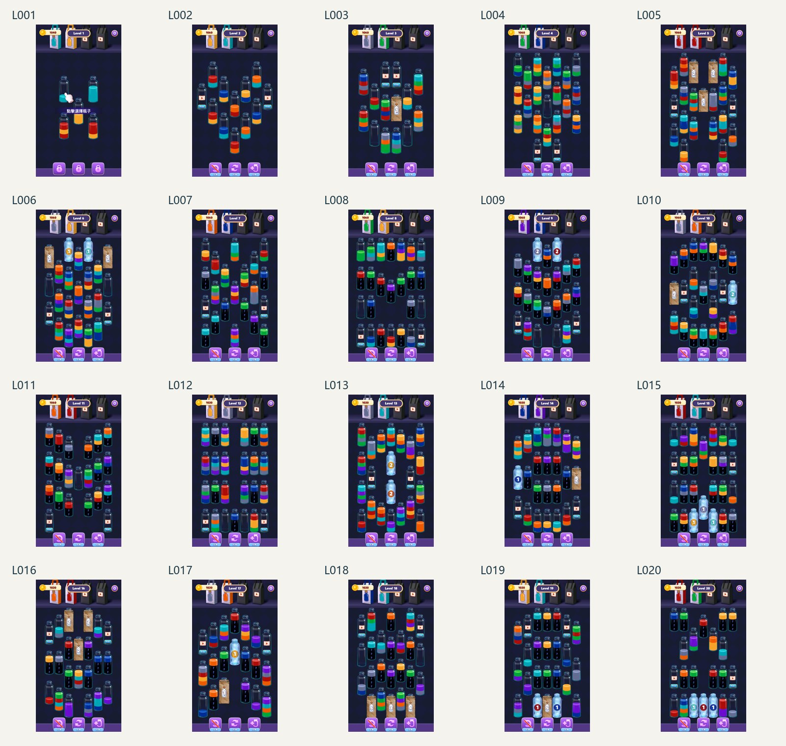
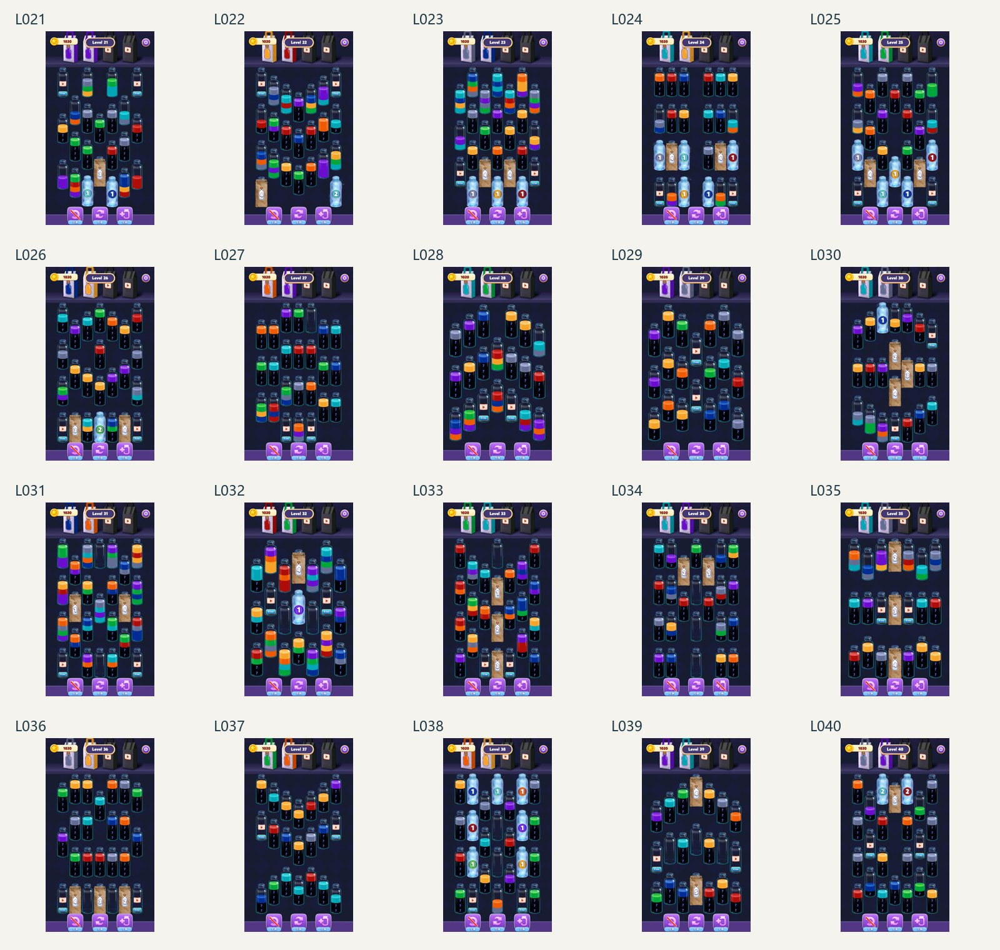
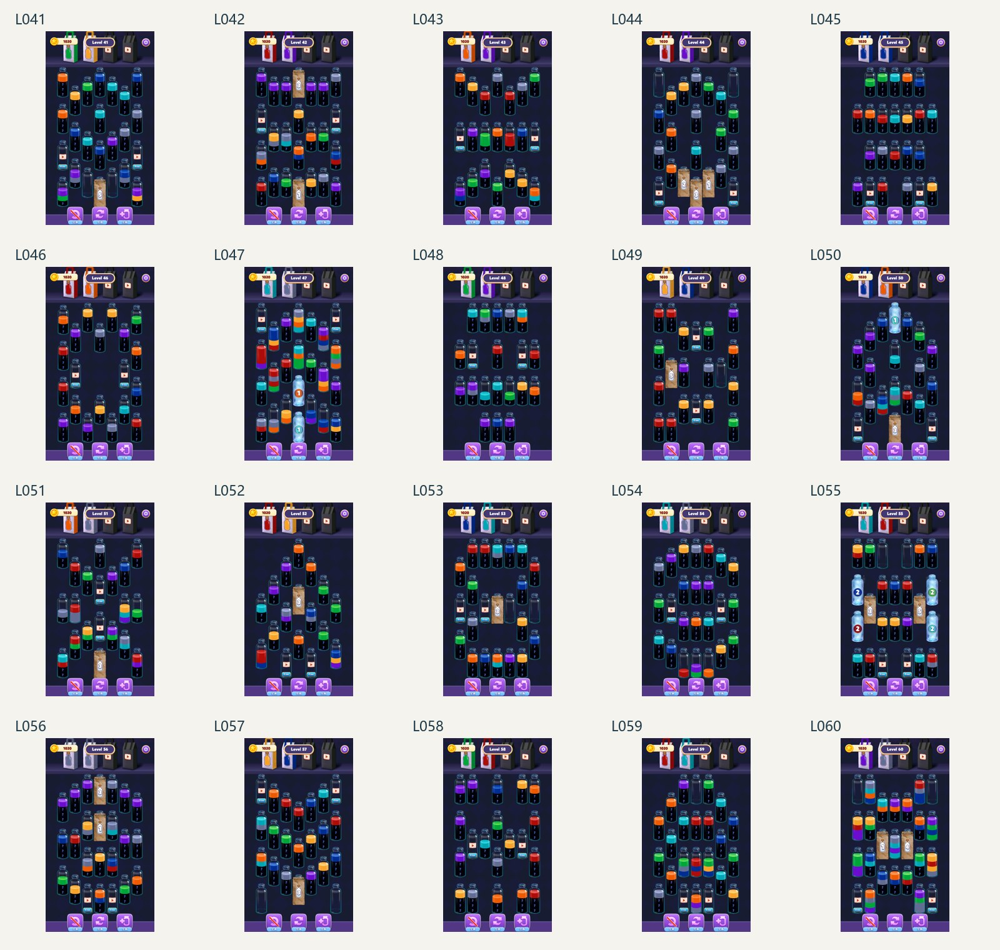
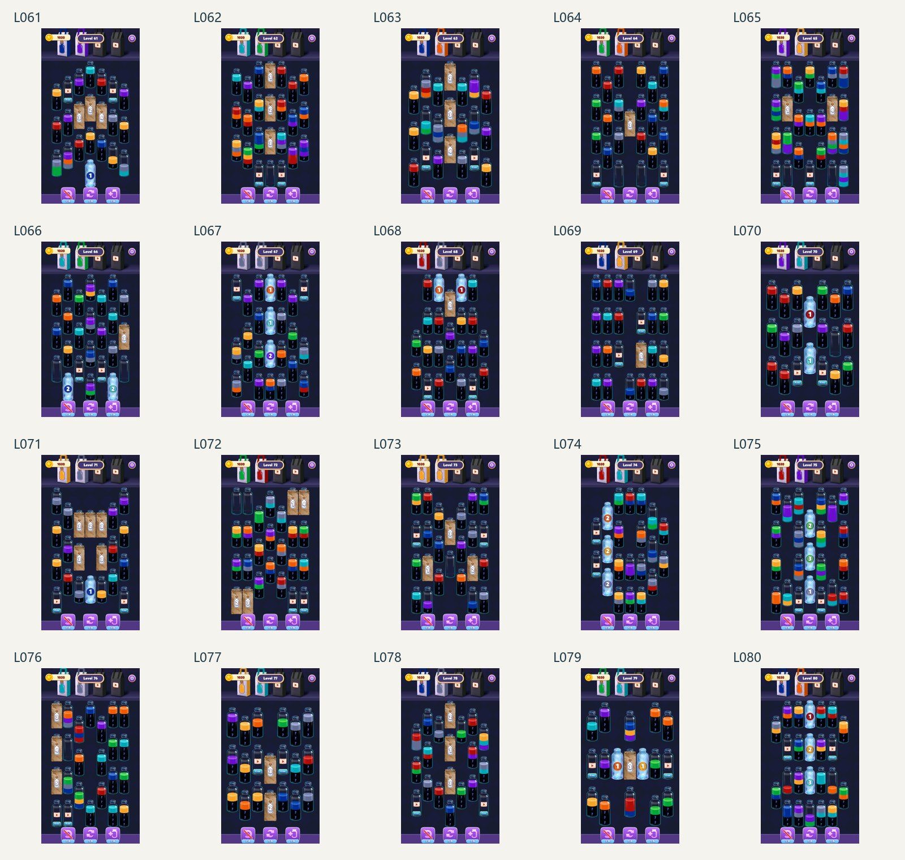
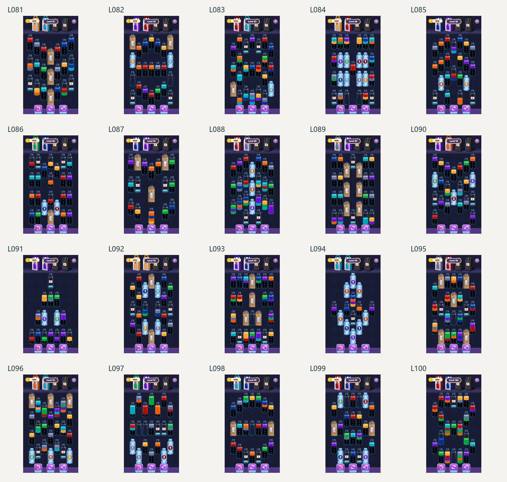
附录 E 参考资料
| 来源号 | 参考资料 | 内容 |
|---|---|---|
| W01 | 《WaterMatch_前100关关卡分析_黄开元.docx》最终提交版 | 个人体验、数据方法、逐阶段分析、改进方向 |
| W02 | 关卡截图与玩家实测截图 | 100 关首屏、实际操作与盘面元素 |
| W03 | 《WaterMatch_前100关数据与截图_黄开元.xlsx》 | 指标、阶段、标签、对照和实测登记 |
资料包含 100 关数据与首屏，实际游玩范围为前述 31 关。数据里的完成率会受广告加瓶影响，分钟流失不单独用于判定关卡好坏。